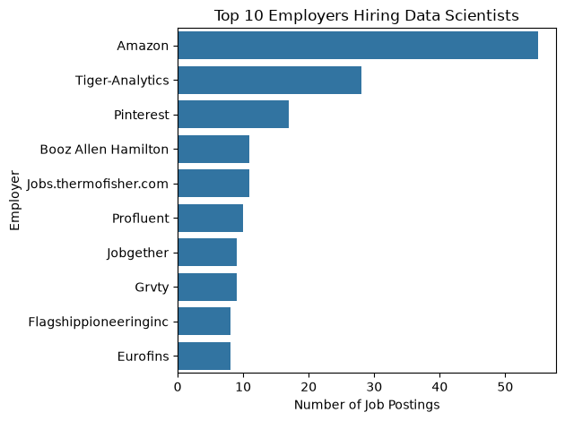
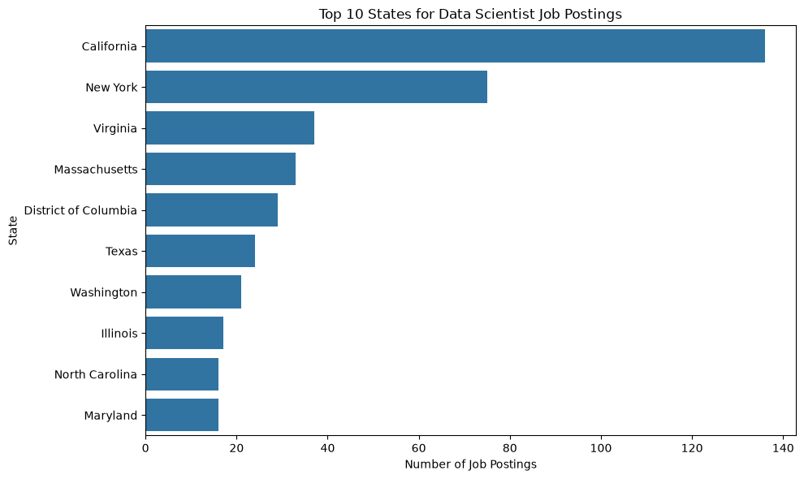
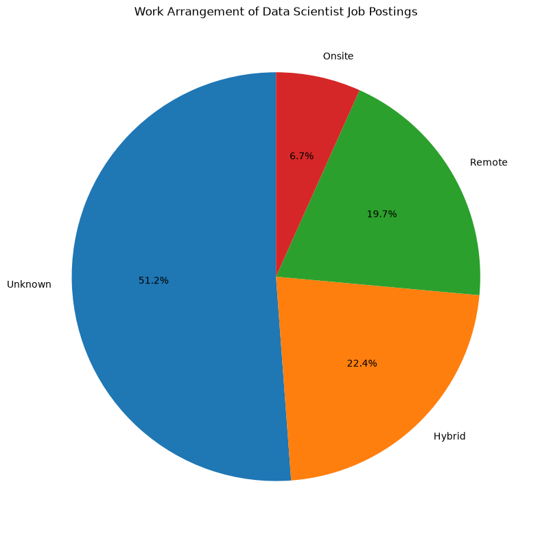
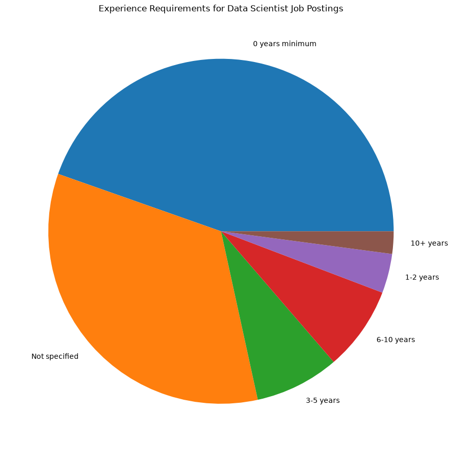
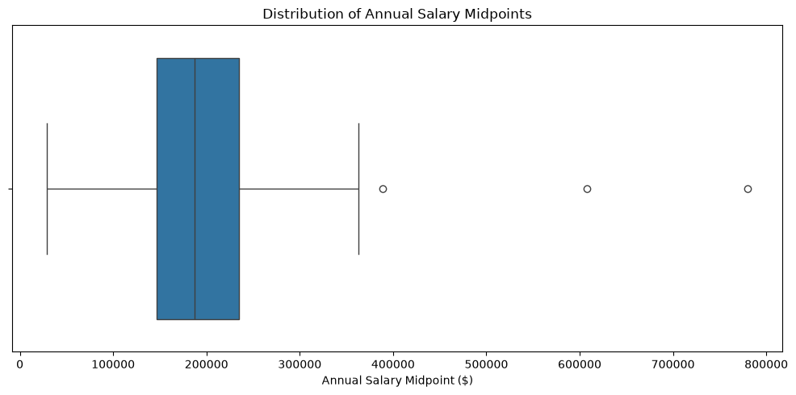
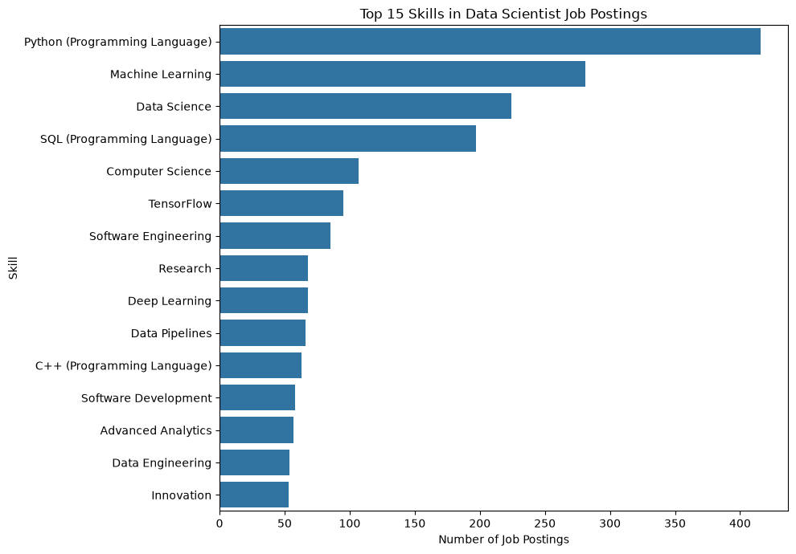
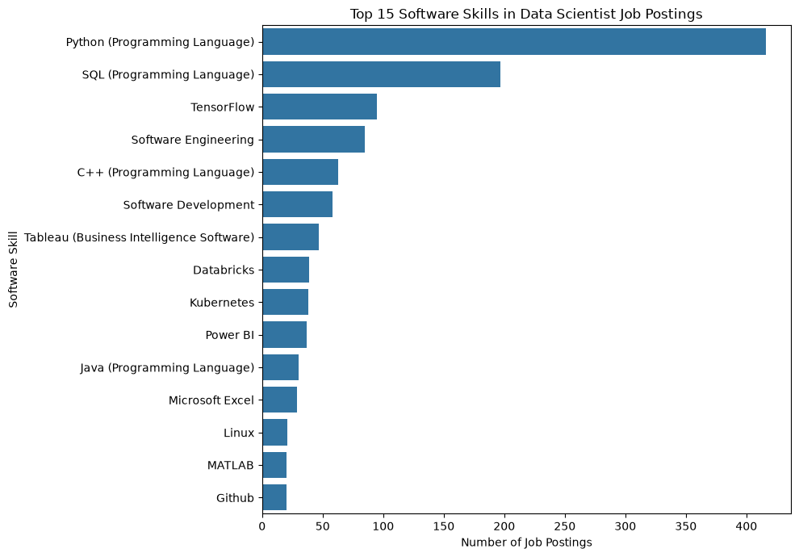

### Using code above to download Jobs_2026 folder from Google Drive to local machine in data folder. Uncomment the code below to run it.
## !gdown --folder "https://drive.google.com/drive/folders/1Tq5Uixwz5J-aG_NfUQdI6X9CIrNz9ZFS?usp=sharing" -O ../data/Jobs_2026Begin Data Cleaning
import os
from pathlib import Path
import os
import sys
from pathlib import Path
from pyspark.sql import SparkSession
os.environ["PYSPARK_PYTHON"] = sys.executable
os.environ["PYSPARK_DRIVER_PYTHON"] = sys.executable
spark = (
SparkSession.builder
.appName("JobPostingsAnalysis")
.master("local[*]")
.config("spark.driver.host", "localhost")
.getOrCreate()
)
spark.conf.set("spark.sql.execution.arrow.pyspark.enabled", "false")
# Use sample mode while testing. Set to False for the full dataset.
USE_SAMPLE = False
data_dir = Path("../data/Jobs_2026")
if not data_dir.exists():
data_dir = Path("data/Jobs_2026")
parquet_files = sorted(data_dir.glob("*.parquet"))
if USE_SAMPLE:
parquet_files = parquet_files[:1]
df = spark.read.parquet(*[str(path) for path in parquet_files])
# Parquet columns are uppercase; normalize once so the rest of the notebook can use lowercase names.
df = df.toDF(*[column.lower() for column in df.columns])
df.createOrReplaceTempView("job_postings")
# comment the lines below when rendering the submission
df.printSchema()
df.show(5)WARNING: Using incubator modules: jdk.incubator.vector
WARNING: package sun.security.action not in java.base
Using Spark's default log4j profile: org/apache/spark/log4j2-defaults.properties
Setting default log level to "WARN".
To adjust logging level use sc.setLogLevel(newLevel). For SparkR, use setLogLevel(newLevel).
/home/ubuntu/.local/lib/python3.12/site-packages/pyspark/testing/utils.py:127: FutureWarning: PySpark does not yet fully support pandas >= 3.0.0. Some features may not work correctly. It is recommended to use pandas < 3.0.0 for now.
require_minimum_pandas_version()
26/09/28 01:31:32 WARN NativeCodeLoader: Unable to load native-hadoop library for your platform... using builtin-java classes where applicable
26/09/28 01:31:33 WARN Utils: Service 'SparkUI' could not bind on port 4040. Attempting port 4041.
26/09/28 01:31:42 WARN SparkStringUtils: Truncated the string representation of a plan since it was too large. This behavior can be adjusted by setting 'spark.sql.debug.maxToStringFields'.root
|-- id: long (nullable = true)
|-- posted: string (nullable = true)
|-- expired: string (nullable = true)
|-- duration: string (nullable = true)
|-- source_types: string (nullable = true)
|-- sources: string (nullable = true)
|-- url: string (nullable = true)
|-- active_urls: string (nullable = true)
|-- active_sources_info: string (nullable = true)
|-- title_raw: string (nullable = true)
|-- body: string (nullable = true)
|-- company_name: string (nullable = true)
|-- company_raw: string (nullable = true)
|-- company_is_staffing: byte (nullable = true)
|-- education_levels: string (nullable = true)
|-- education_levels_name: string (nullable = true)
|-- min_edulevels: string (nullable = true)
|-- min_edulevels_name: string (nullable = true)
|-- max_edulevels: string (nullable = true)
|-- max_edulevels_name: string (nullable = true)
|-- employment_type: string (nullable = true)
|-- employment_type_name: string (nullable = true)
|-- min_years_experience: string (nullable = true)
|-- max_years_experience: string (nullable = true)
|-- is_internship: byte (nullable = true)
|-- salary: string (nullable = true)
|-- remote_type: string (nullable = true)
|-- remote_type_name: string (nullable = true)
|-- original_pay_period: string (nullable = true)
|-- salary_to: string (nullable = true)
|-- salary_from: string (nullable = true)
|-- location: string (nullable = true)
|-- city: string (nullable = true)
|-- city_name: string (nullable = true)
|-- county: string (nullable = true)
|-- county_name: string (nullable = true)
|-- msa: string (nullable = true)
|-- msa_name: string (nullable = true)
|-- state: string (nullable = true)
|-- state_name: string (nullable = true)
|-- county_outgoing: string (nullable = true)
|-- county_name_outgoing: string (nullable = true)
|-- county_incoming: string (nullable = true)
|-- county_name_incoming: string (nullable = true)
|-- msa_outgoing: string (nullable = true)
|-- msa_name_outgoing: string (nullable = true)
|-- msa_incoming: string (nullable = true)
|-- msa_name_incoming: string (nullable = true)
|-- naics2: string (nullable = true)
|-- naics2_name: string (nullable = true)
|-- naics3: string (nullable = true)
|-- naics3_name: string (nullable = true)
|-- naics4: string (nullable = true)
|-- naics4_name: string (nullable = true)
|-- naics5: string (nullable = true)
|-- naics5_name: string (nullable = true)
|-- naics6: string (nullable = true)
|-- naics6_name: string (nullable = true)
|-- title: string (nullable = true)
|-- title_name: string (nullable = true)
|-- title_clean: string (nullable = true)
|-- skills: string (nullable = true)
|-- skills_name: string (nullable = true)
|-- specialized_skills: string (nullable = true)
|-- specialized_skills_name: string (nullable = true)
|-- certifications: string (nullable = true)
|-- certifications_name: string (nullable = true)
|-- common_skills: string (nullable = true)
|-- common_skills_name: string (nullable = true)
|-- software_skills: string (nullable = true)
|-- software_skills_name: string (nullable = true)
|-- onet: string (nullable = true)
|-- onet_name: string (nullable = true)
|-- cip6: string (nullable = true)
|-- cip6_name: string (nullable = true)
|-- cip4: string (nullable = true)
|-- cip4_name: string (nullable = true)
|-- cip2: string (nullable = true)
|-- cip2_name: string (nullable = true)
|-- soc_2021_2: string (nullable = true)
|-- soc_2021_2_name: string (nullable = true)
|-- soc_2021_3: string (nullable = true)
|-- soc_2021_3_name: string (nullable = true)
|-- soc_2021_4: string (nullable = true)
|-- soc_2021_4_name: string (nullable = true)
|-- soc_2021_5: string (nullable = true)
|-- soc_2021_5_name: string (nullable = true)
|-- meteor_career_area: string (nullable = true)
|-- meteor_career_area_name: string (nullable = true)
|-- meteor_occupation: string (nullable = true)
|-- meteor_occupation_name: string (nullable = true)
|-- meteor_specialized_occupation: string (nullable = true)
|-- meteor_specialized_occupation_name: string (nullable = true)
|-- meteor_occupation_group: string (nullable = true)
|-- meteor_occupation_group_name: string (nullable = true)
|-- meteor_v6_specialized_occupation: string (nullable = true)
|-- meteor_v6_specialized_occupation_name: string (nullable = true)
|-- meteor_v6_occupation: string (nullable = true)
|-- meteor_v6_occupation_name: string (nullable = true)
|-- meteor_v6_occupation_group: string (nullable = true)
|-- meteor_v6_occupation_group_name: string (nullable = true)
|-- meteor_v6_career_area: string (nullable = true)
|-- meteor_v6_career_area_name: string (nullable = true)
|-- soc_2: string (nullable = true)
|-- soc_2_name: string (nullable = true)
|-- soc_3: string (nullable = true)
|-- soc_3_name: string (nullable = true)
|-- soc_4: string (nullable = true)
|-- soc_4_name: string (nullable = true)
|-- soc_5: string (nullable = true)
|-- soc_5_name: string (nullable = true)
|-- meteor_sectors: string (nullable = true)
|-- meteor_sectors_name: string (nullable = true)
|-- naics_2022_2: string (nullable = true)
|-- naics_2022_2_name: string (nullable = true)
|-- naics_2022_3: string (nullable = true)
|-- naics_2022_3_name: string (nullable = true)
|-- naics_2022_4: string (nullable = true)
|-- naics_2022_4_name: string (nullable = true)
|-- naics_2022_5: string (nullable = true)
|-- naics_2022_5_name: string (nullable = true)
|-- naics_2022_6: string (nullable = true)
|-- naics_2022_6_name: string (nullable = true)
|-- is_contract: byte (nullable = true)
|-- wrds_gvkey: string (nullable = true)
|-- wrds_company_name: string (nullable = true)
|-- wrds_naics: string (nullable = true)
|-- wrds_naics_2022: string (nullable = true)
|-- wrds_naics_2022_name: string (nullable = true)
|-- wrds_sic: string (nullable = true)
|-- wrds_sic_name: string (nullable = true)
|-- wrds_as_of: string (nullable = true)
|-- wrds_match_basis: string (nullable = true)
|-- naics_review_status: string (nullable = true)
+------+----------+----------+--------+------------------+------------------+--------------------+--------------------+--------------------+--------------------+--------------------+--------------------+--------------------+-------------------+----------------+---------------------+-------------+--------------------+-------------+--------------------+---------------+--------------------+--------------------+--------------------+-------------+--------------------+-----------+----------------+-------------------+---------+-----------+--------------------+----+-----------+------+-----------+----+--------+-----+-------------+---------------+--------------------+---------------+--------------------+------------+-----------------+------------+-----------------+------+--------------------+------+--------------------+------+--------------------+------+--------------------+------+--------------------+-----+--------------------+--------------------+--------------------+--------------------+--------------------+-----------------------+--------------------+--------------------+--------------------+--------------------+--------------------+--------------------+----------+-------------------+-------+------------------+----+---------+----+---------+----------+---------------+----------+---------------+----------+---------------+----------+---------------+------------------+-----------------------+-----------------+----------------------+-----------------------------+----------------------------------+-----------------------+----------------------------+--------------------------------+-------------------------------------+--------------------+-------------------------+--------------------------+-------------------------------+---------------------+--------------------------+-----+----------+-------+--------------------+-------+--------------------+-------+-------------------+--------------+-------------------+------------+--------------------+------------+--------------------+------------+--------------------+------------+--------------------+------------+--------------------+-----------+----------+-----------------+----------+---------------+--------------------+--------+-------------+----------+----------------+-------------------+
| id| posted| expired|duration| source_types| sources| url| active_urls| active_sources_info| title_raw| body| company_name| company_raw|company_is_staffing|education_levels|education_levels_name|min_edulevels| min_edulevels_name|max_edulevels| max_edulevels_name|employment_type|employment_type_name|min_years_experience|max_years_experience|is_internship| salary|remote_type|remote_type_name|original_pay_period|salary_to|salary_from| location|city| city_name|county|county_name| msa|msa_name|state| state_name|county_outgoing|county_name_outgoing|county_incoming|county_name_incoming|msa_outgoing|msa_name_outgoing|msa_incoming|msa_name_incoming|naics2| naics2_name|naics3| naics3_name|naics4| naics4_name|naics5| naics5_name|naics6| naics6_name|title| title_name| title_clean| skills| skills_name| specialized_skills|specialized_skills_name| certifications| certifications_name| common_skills| common_skills_name| software_skills|software_skills_name| onet| onet_name| cip6| cip6_name|cip4|cip4_name|cip2|cip2_name|soc_2021_2|soc_2021_2_name|soc_2021_3|soc_2021_3_name|soc_2021_4|soc_2021_4_name|soc_2021_5|soc_2021_5_name|meteor_career_area|meteor_career_area_name|meteor_occupation|meteor_occupation_name|meteor_specialized_occupation|meteor_specialized_occupation_name|meteor_occupation_group|meteor_occupation_group_name|meteor_v6_specialized_occupation|meteor_v6_specialized_occupation_name|meteor_v6_occupation|meteor_v6_occupation_name|meteor_v6_occupation_group|meteor_v6_occupation_group_name|meteor_v6_career_area|meteor_v6_career_area_name|soc_2|soc_2_name| soc_3| soc_3_name| soc_4| soc_4_name| soc_5| soc_5_name|meteor_sectors|meteor_sectors_name|naics_2022_2| naics_2022_2_name|naics_2022_3| naics_2022_3_name|naics_2022_4| naics_2022_4_name|naics_2022_5| naics_2022_5_name|naics_2022_6| naics_2022_6_name|is_contract|wrds_gvkey|wrds_company_name|wrds_naics|wrds_naics_2022|wrds_naics_2022_name|wrds_sic|wrds_sic_name|wrds_as_of|wrds_match_basis|naics_review_status|
+------+----------+----------+--------+------------------+------------------+--------------------+--------------------+--------------------+--------------------+--------------------+--------------------+--------------------+-------------------+----------------+---------------------+-------------+--------------------+-------------+--------------------+---------------+--------------------+--------------------+--------------------+-------------+--------------------+-----------+----------------+-------------------+---------+-----------+--------------------+----+-----------+------+-----------+----+--------+-----+-------------+---------------+--------------------+---------------+--------------------+------------+-----------------+------------+-----------------+------+--------------------+------+--------------------+------+--------------------+------+--------------------+------+--------------------+-----+--------------------+--------------------+--------------------+--------------------+--------------------+-----------------------+--------------------+--------------------+--------------------+--------------------+--------------------+--------------------+----------+-------------------+-------+------------------+----+---------+----+---------+----------+---------------+----------+---------------+----------+---------------+----------+---------------+------------------+-----------------------+-----------------+----------------------+-----------------------------+----------------------------------+-----------------------+----------------------------+--------------------------------+-------------------------------------+--------------------+-------------------------+--------------------------+-------------------------------+---------------------+--------------------------+-----+----------+-------+--------------------+-------+--------------------+-------+-------------------+--------------+-------------------+------------+--------------------+------------+--------------------+------------+--------------------+------------+--------------------+------------+--------------------+-----------+----------+-----------------+----------+---------------+--------------------+--------+-------------+----------+----------------+-------------------+
|208140|2026-06-05|2026-06-11| 6|["fantastic_jobs"]|["fantastic_jobs"]|https://www.payco...| NULL| NULL|Transportation Da...|Job DetailsJob Lo...| HW LOCHNER INC| HW LOCHNER INC| NULL| [4, 5]| ["Bachelor's degr...| NULL| NULL| 5| Master's degree| full_time| FULL_TIME| NULL| NULL| 0|USD 90000 - 11000...| 2| Hybrid| annual| 110000| 90000|Orange, Californi...|NULL| California| NULL| NULL|NULL| NULL| NULL|United States| NULL| NULL| NULL| NULL| NULL| NULL| NULL| NULL| 54|Professional, Sci...| 541|Professional, Sci...| 5413|Architectural, En...| NULL| NULL| NULL| NULL| NULL|Transportation Da...|Transportation Da...|["KS1200H6XYN1CR0...|["Microsoft Excel...|["KS125LS6N7WP4S6...| ["Python (Program...| []| []|["KS1200H6XYN1CR0...| ["Microsoft Excel"]|["KS1200H6XYN1CR0...|["Microsoft Excel...|41-9012.00| Models| NULL| NULL|NULL| NULL|NULL| NULL| NULL| NULL| NULL| NULL| NULL| NULL| NULL| NULL| 41-0000| Sales and Related...| 41-9012| Models| 41-9012.00| Models| 41-9000| Other Sales and R...| 41-9012.00| Models| 41-9012| Models| 41-9000| Other Sales and R...| 41-0000| Sales and Related...| 41| NULL|41-9000|Other Sales and R...|41-9010|Models, Demonstra...|41-9012| Models| NULL| NULL| 54|Professional, Sci...| 541|Professional, Sci...| 5413|Architectural, En...| NULL| NULL| NULL| NULL| NULL| NULL| NULL| NULL| NULL| NULL| NULL| NULL| NULL| NULL| NULL|
|208141|2024-09-11| NULL| NULL| ["jobhive"]| ["oracle"]|https://ejrz.fa.u...|["https://ejrz.fa...|[{"source": "jobh...|Admissions Regist...|The Admissions RN...| EJRZ| EJRZ| NULL| [1]| ["High school dip...| 1|High school diplo...| 1|High school diplo...| NULL| NULL| 0| 1| 0|{'min': '', 'max'...| NULL| NULL| NULL| NULL| NULL| United States|NULL| NULL| NULL| NULL|NULL| NULL| NULL| NULL| NULL| NULL| NULL| NULL| NULL| NULL| NULL| NULL| 31-33| Manufacturing| 331|Primary Metal Man...| NULL| NULL| NULL| NULL| NULL| NULL| NULL|Admissions Regist...|Admissions Regist...| []| []| []| []| []| []| []| []| []| []|29-1141.00| Registered Nurses| NULL| NULL|NULL| NULL|NULL| NULL| NULL| NULL| NULL| NULL| NULL| NULL| NULL| NULL| 29-0000| Healthcare Practi...| 29-1141| Registered Nurses| 29-1141.00| Registered Nurses| 29-1000| Healthcare Diagno...| 29-1141.00| Registered Nurses| 29-1141| Registered Nurses| 29-1000| Healthcare Diagno...| 29-0000| Healthcare Practi...| 29| NULL|29-1000|Healthcare Diagno...|29-1140| Registered Nurses|29-1141| Registered Nurses| NULL| NULL| 31-33| Manufacturing| 331|Primary Metal Man...| NULL| NULL| NULL| NULL| NULL| NULL| NULL| NULL| NULL| NULL| NULL| NULL| NULL| NULL| NULL| NULL| NULL|
|208142|2026-03-17| NULL| NULL| ["jobhive"]| ["amazon"]|https://account.a...|["https://account...|[{"source": "jobh...|Risk Manager, Sel...|We are seeking a ...| Amazon| Amazon| NULL| [1]| ["High school dip...| 1|High school diplo...| 1|High school diplo...| full_time| Full Time| 0| 1| 0|{'min': '', 'max'...| NULL| NULL| NULL| NULL| NULL| Tempe, Arizona|NULL| Tempe| NULL| NULL|NULL| NULL| AZ| Arizona| NULL| NULL| NULL| NULL| NULL| NULL| NULL| NULL| 51| Information| 516|Broadcasting and ...| 5162|Media Streaming D...| 51621|Media Streaming D...|516210|Media Streaming D...| NULL|Risk Manager, Sel...|Risk Manager, Sel...|["KS441075WGFJJ4G...|["Strategic Think...| []| []| []| []|["KS441075WGFJJ4G...|["Strategic Think...| []| []|27-2011.00| Actors| NULL| NULL|NULL| NULL|NULL| NULL| NULL| NULL| NULL| NULL| NULL| NULL| NULL| NULL| 27-0000| Arts, Design, Ent...| 27-2011| Actors| 27-2011.00| Actors| 27-2000| Entertainers and ...| 27-2011.00| Actors| 27-2011| Actors| 27-2000| Entertainers and ...| 27-0000| Arts, Design, Ent...| 27| NULL|27-2000|Entertainers and ...|27-2010|Actors, Producers...|27-2011| Actors| NULL| NULL| 51| Information| 516|Broadcasting and ...| 5162|Media Streaming D...| 51621|Media Streaming D...| 516210|Media Streaming D...| NULL| NULL| NULL| NULL| NULL| NULL| NULL| NULL| NULL| NULL| NULL|
|208143|2026-07-20| NULL| NULL| ["rareroles"]| ["rareroles"]|https://boards.gr...|["https://boards....|[{"source": "rare...|ServiceNow Sr. De...| NULL|Accenture Federal...|Accenture Federal...| NULL| [1]| ["High school dip...| 1|High school diplo...| 1|High school diplo...| full_time| Full Time| 0| 1| 0|USD 146,300 - 179...| NULL| NULL| annual| 179100| 146300|Springfield, Virg...|NULL|Springfield| NULL| NULL|NULL| NULL| VA| Virginia| NULL| NULL| NULL| NULL| NULL| NULL| NULL| NULL| 48-49|Transportation an...| 492|Couriers and Mess...| 4921|Couriers and Expr...| 49211|Couriers and Expr...|492110|Couriers and Expr...| NULL|ServiceNow Sr. De...|ServiceNow Sr. De...| []| []| []| []| []| []| []| []| []| []|15-1252.00|Software Developers|52.0211|Project Management|NULL| NULL|NULL| NULL| NULL| NULL| NULL| NULL| NULL| NULL| NULL| NULL| 15-0000| Computer and Math...| 15-1252| Software Developers| 15-1252.00| Software Developers| 15-1200| Computer Occupations| 15-1252.00| Software Developers| 15-1252| Software Developers| 15-1200| Computer Occupations| 15-0000| Computer and Math...| 15| NULL|15-1200|Computer Occupations|15-1250|Software and Web ...|15-1252|Software Developers| NULL| NULL| 48-49|Transportation an...| 492|Couriers and Mess...| 4921|Couriers and Expr...| 49211|Couriers and Expr...| 492110|Couriers and Expr...| NULL| NULL| NULL| NULL| NULL| NULL| NULL| NULL| NULL| NULL| NULL|
|208144|2024-07-22| NULL| NULL| ["jobhive"]| ["icims"]|https://careers-s...|["https://careers...|[{"source": "jobh...|Traveling Retail ...|Overview Travelin...| Sparinc| Sparinc| NULL| [1]| ["High school dip...| 1|High school diplo...| 1|High school diplo...| full_time| Full Time, Per diem| 0| 1| 0|{'min': '', 'max'...| NULL| NULL| NULL| NULL| NULL| Cleveland, Ohio|NULL| Cleveland| NULL| NULL|NULL| NULL| OH| Ohio| NULL| NULL| NULL| NULL| NULL| NULL| NULL| NULL| 23| Construction| 237|Heavy and Civil E...| 2371|Utility System Co...| 23713|Power and Communi...|237130|Power and Communi...| NULL|Traveling Retail ...|Traveling Retail ...|["KS126HY6YLTB9R7...|["Microsoft Offic...|["KS127CS79GV081F...| ["Operations Mana...|["ESE495A4017EB94...|["Valid Driver's ...|["KS126HY6YLTB9R7...|["Microsoft Offic...|["KS126HY6YLTB9R7...|["Microsoft Office"]|41-9012.00| Models| NULL| NULL|NULL| NULL|NULL| NULL| NULL| NULL| NULL| NULL| NULL| NULL| NULL| NULL| 41-0000| Sales and Related...| 41-9012| Models| 41-9012.00| Models| 41-9000| Other Sales and R...| 41-9012.00| Models| 41-9012| Models| 41-9000| Other Sales and R...| 41-0000| Sales and Related...| 41| NULL|41-9000|Other Sales and R...|41-9010|Models, Demonstra...|41-9012| Models| NULL| NULL| 23| Construction| 237|Heavy and Civil E...| 2371|Utility System Co...| 23713|Power and Communi...| 237130|Power and Communi...| NULL| NULL| NULL| NULL| NULL| NULL| NULL| NULL| NULL| NULL| NULL|
+------+----------+----------+--------+------------------+------------------+--------------------+--------------------+--------------------+--------------------+--------------------+--------------------+--------------------+-------------------+----------------+---------------------+-------------+--------------------+-------------+--------------------+---------------+--------------------+--------------------+--------------------+-------------+--------------------+-----------+----------------+-------------------+---------+-----------+--------------------+----+-----------+------+-----------+----+--------+-----+-------------+---------------+--------------------+---------------+--------------------+------------+-----------------+------------+-----------------+------+--------------------+------+--------------------+------+--------------------+------+--------------------+------+--------------------+-----+--------------------+--------------------+--------------------+--------------------+--------------------+-----------------------+--------------------+--------------------+--------------------+--------------------+--------------------+--------------------+----------+-------------------+-------+------------------+----+---------+----+---------+----------+---------------+----------+---------------+----------+---------------+----------+---------------+------------------+-----------------------+-----------------+----------------------+-----------------------------+----------------------------------+-----------------------+----------------------------+--------------------------------+-------------------------------------+--------------------+-------------------------+--------------------------+-------------------------------+---------------------+--------------------------+-----+----------+-------+--------------------+-------+--------------------+-------+-------------------+--------------+-------------------+------------+--------------------+------------+--------------------+------------+--------------------+------------+--------------------+------------+--------------------+-----------+----------+-----------------+----------+---------------+--------------------+--------+-------------+----------+----------------+-------------------+
only showing top 5 rows## Filtering job postings for selected NAICS code & career pathway and displaying the results to ensure we have enough job postings.
from pyspark.sql import functions as F
TARGET_NAICS = "5417"
TARGET_CAREER = "Data Scientists"
career_df = df.filter(
(F.trim(F.col("naics4").cast("string")) == TARGET_NAICS) &
(F.trim(F.col("onet_name")) == TARGET_CAREER)
)
initial_filtered_count = career_df.count()
print("Target NAICS:", TARGET_NAICS)
print("Target career:", TARGET_CAREER)
print(f"Filtered postings before cleaning: {initial_filtered_count:,}")[Stage 2:=======================================> (4 + 2) / 6]Target NAICS: 5417
Target career: Data Scientists
Filtered postings before cleaning: 1,120 # Selecting variables of interest
analysis_cols = [
"id",
"posted",
"url",
"title_name",
"title_raw",
"company_name",
"location",
"city_name",
"state_name",
"employment_type_name",
"remote_type_name",
"salary_from",
"salary_to",
"original_pay_period",
"min_years_experience",
"max_years_experience",
"education_levels_name",
"skills_name",
"specialized_skills_name",
"common_skills_name",
"software_skills_name",
"certifications_name",
"onet",
"onet_name",
"naics4",
"naics4_name"
]
career_df = career_df.select(*analysis_cols)# Dealing with missing values - seeing number of missing values for each variable of interest before cleaning
# Creating missing values function
MISSING_STRINGS = [
"",
"[]",
"null",
"none",
"n/a",
"na",
"unknown"
]
def is_missing(column_name):
value = F.lower(
F.trim(
F.col(column_name).cast("string")
)
)
return (
F.col(column_name).isNull() |
value.isin(MISSING_STRINGS)
)
important_cols = [
"posted",
"title_name",
"company_name",
"city_name",
"state_name",
"employment_type_name",
"remote_type_name",
"salary_from",
"salary_to",
"original_pay_period",
"min_years_experience",
"max_years_experience",
"education_levels_name",
"skills_name",
"specialized_skills_name",
"common_skills_name",
"software_skills_name",
"certifications_name",
"onet_name",
"naics4",
"naics4_name"
]
total_before_cleaning = career_df.count()
missing_before = []
for c in important_cols:
missing_count = career_df.filter(
is_missing(c)
).count()
missing_percent = (
100 * missing_count / total_before_cleaning
if total_before_cleaning else 0
)
missing_before.append(
(
c,
missing_count,
round(missing_percent, 1)
)
)
missing_before_df = spark.createDataFrame(
missing_before,
[
"variable",
"missing_count",
"missing_percent"
]
)
missing_before_df.show(
len(important_cols),
truncate=False
)[Stage 71:> (0 + 1) / 1]+-----------------------+-------------+---------------+
|variable |missing_count|missing_percent|
+-----------------------+-------------+---------------+
|posted |130 |11.6 |
|title_name |0 |0.0 |
|company_name |0 |0.0 |
|city_name |197 |17.6 |
|state_name |109 |9.7 |
|employment_type_name |286 |25.5 |
|remote_type_name |531 |47.4 |
|salary_from |783 |69.9 |
|salary_to |783 |69.9 |
|original_pay_period |772 |68.9 |
|min_years_experience |372 |33.2 |
|max_years_experience |638 |57.0 |
|education_levels_name |190 |17.0 |
|skills_name |30 |2.7 |
|specialized_skills_name|32 |2.9 |
|common_skills_name |562 |50.2 |
|software_skills_name |267 |23.8 |
|certifications_name |1002 |89.5 |
|onet_name |0 |0.0 |
|naics4 |0 |0.0 |
|naics4_name |0 |0.0 |
+-----------------------+-------------+---------------+
# Convering blank-like values to NULL
text_cols = [
"posted",
"url",
"title_name",
"title_raw",
"company_name",
"location",
"city_name",
"state_name",
"employment_type_name",
"remote_type_name",
"salary_from",
"salary_to",
"original_pay_period",
"min_years_experience",
"max_years_experience",
"education_levels_name",
"skills_name",
"specialized_skills_name",
"common_skills_name",
"software_skills_name",
"certifications_name",
"onet",
"onet_name",
"naics4",
"naics4_name"
]
for c in text_cols:
career_df = career_df.withColumn(
c,
F.when(
is_missing(c),
F.lit(None)
).otherwise(
F.trim(F.col(c))
)
)# Creating date window
career_df = career_df.withColumn(
"posted_date",
F.to_date("posted")
)
career_df.select(
F.min("posted_date").alias("earliest_posting"),
F.max("posted_date").alias("latest_posting")
).show()+----------------+--------------+
|earliest_posting|latest_posting|
+----------------+--------------+
| 2016-08-08| 2026-08-23|
+----------------+--------------+
# Checking for duplicates
# Testing source IDs
rows_before_dedup = career_df.count()
duplicate_ids = (
career_df
.filter(F.col("id").isNotNull())
.groupBy("id")
.count()
.filter(F.col("count") > 1)
)
duplicate_id_groups = duplicate_ids.count()
print(f"Rows before deduplication: {rows_before_dedup:,}")
print(f"Duplicate ID groups: {duplicate_id_groups:,}")
# Testing posting-level duplicates
posting_key = [
"title_name",
"company_name",
"location",
"posted",
"salary_from",
"salary_to"
]
potential_duplicates = (
career_df
.groupBy(*posting_key)
.count()
.filter(F.col("count") > 1)
.orderBy(F.desc("count"))
)
print(
"Potential duplicate posting groups:",
potential_duplicates.count()
)
potential_duplicates.show(
105,
truncate=False
) Rows before deduplication: 1,120
Duplicate ID groups: 0 Potential duplicate posting groups: 105[Stage 91:================================================> (5 + 1) / 6]+------------------------------------------------------------------------------------+------------------------------------------+-----------------------------------------------------------------------+----------+-----------+---------+-----+
|title_name |company_name |location |posted |salary_from|salary_to|count|
+------------------------------------------------------------------------------------+------------------------------------------+-----------------------------------------------------------------------+----------+-----------+---------+-----+
|Sr. Data Scientist |Jobs via Dice |Reston, VA |2026-06-03|NULL |NULL |10 |
|Capture Program Quality Engineer |Lockheed Martin |Fort Worth, TX |2026-06-01|NULL |NULL |7 |
|Senior/Staff Safety Research Engineer - Quantitative Risk Assessment |Zoox |Foster City, CA |2026-05-30|162000 |291000 |7 |
|Machine Learning Research Engineer |Jobs via Dice |Springfield, VA |2026-06-03|NULL |NULL |6 |
|Machine Learning Research Engineer |Booz Allen Hamilton |Springfield, VA |2026-06-02|NULL |NULL |6 |
|Marketing Analytics Manager |Reser's Fine Foods |Beaverton, OR |2026-06-04|NULL |NULL |5 |
|Data Science Manager, PXT Central Science |Amazon |Arlington, Virginia |2026-05-21|NULL |NULL |5 |
|Data Scientist, Amazon Music - DISCO |Amazon |Sunnyvale, California |2026-07-15|NULL |NULL |4 |
|Machine Learning Scientist |BioSpace |Thousand Oaks, CA |2026-06-03|NULL |NULL |4 |
|Machine Learning Engineer Intern |PlusAI |Santa Clara, CA |2026-05-28|NULL |NULL |4 |
|AI Engineer - Forward Deployed |Edison Scientific |San Francisco, CA |2026-06-03|200000 |350000 |4 |
|AI Engineer - Forward Deployed |Edison Scientific |New York, NY |2026-06-03|200000 |350000 |4 |
|Senior Product Manager |Qventus |Remote, United States |2026-06-04|124000 |186000 |4 |
|Data Scientist, Marketing |Best Buy |Minneapolis, MN |2026-05-23|100300 |179700 |3 |
|Data Scientist/Machine Learning Engineer |Cathexis |Tysons, VA |2026-05-30|120000 |150000 |3 |
|Senior Business Manager, Product Analytics |Capital One |McLean, VA |2026-05-23|NULL |NULL |3 |
|Data Scientist |Booz Allen Hamilton |Washington, DC |2026-06-03|NULL |NULL |3 |
|Data Scientist |Viasat |Tempe, AZ |2026-06-03|NULL |NULL |3 |
|Data Science & Machine Learning Engineer |Life Science Data Systems |San Francisco, CA |2026-05-29|21 |28 |3 |
|Data Scientist |Booz Allen Hamilton |Reston, VA |2026-06-03|NULL |NULL |3 |
|Engineer II, AI/Machine Learning |Masimo |Irvine, CA |2026-05-29|NULL |NULL |3 |
|Computer Vision/Machine Learning Engineer |The Select Group |Cupertino, CA |2026-06-02|NULL |NULL |3 |
|Senior Staff, Machine Learning Engineer |Poshmark |Redwood City, CA |2026-06-02|NULL |NULL |3 |
|Machine Learning Engineer |PhysicsX |San Francisco, CA |2026-06-02|NULL |NULL |3 |
|Principal Machine Learning Engineer |Biibhr |Remote, USA |2026-05-29|NULL |NULL |3 |
|Machine Learning Physics Graduate Student |Lawrence Livermore National Laboratory |Livermore, CA |2026-06-02|6752 |8201 |3 |
|MLOps Engineer, Mid |Booz Allen Hamilton |Alexandria, VA |2026-05-29|NULL |NULL |3 |
|Senior Manager, Machine Learning Science - Fraud & Risk |Expedia Group |Seattle, WA |2026-06-01|173000 |242500 |3 |
|Machine Learning Engineer |Blue River Technology |Santa Clara, CA |2026-05-31|135000 |378000 |3 |
|Sr Machine Learning Scientist |Amgen |US - California - Thousand Oaks |2026-06-01|NULL |NULL |3 |
|Machine Learning Engineer |Booz Allen Hamilton |Washington, DC |2026-05-30|NULL |NULL |3 |
|Machine Learning Engineer |Bah |McLean, VA |2026-05-29|77600 |176000 |3 |
|Senior Machine Learning Engineer |Arcade |San Francisco, CA |2026-05-30|NULL |NULL |3 |
|Machine Learning Research Engineer |Lawrence Livermore National Laboratory |Livermore, CA |2026-06-01|146340 |222564 |3 |
|Machine Learning Engineer Intern |PlusAI |Santa Clara, CA |2026-05-29|NULL |NULL |3 |
|MLOps Engineer, Mid |Bah |Chantilly, VA |2026-05-29|77600 |176000 |3 |
|Entry Level AI & Machine Learning Engineer |SynergisticIT |Jacksonville, FL |2026-05-29|NULL |NULL |3 |
|Staff Machine Learning Engineer |AppFolio |Denver, CO |2026-06-01|200000 |250000 |3 |
|Machine Learning Physics Graduate Student |LLNL |Livermore, CA, United States |2026-06-02|81000 |98400 |3 |
|Machine Learning Scientist, Reinforcement Learning |Profluent |Emeryville, California, United States; Hybrid (2-3 days on-site) |2026-06-02|200000 |330000 |3 |
|Machine Learning Engineer 5 - Decisioning & Optimization |Netflix |New York, NY |2026-06-02|466000 |750000 |3 |
|Applied Artificial Intelligence Machine Learning, Sr Associate |hackajob |Columbus, OH |2026-06-02|128200 |195000 |3 |
|Machine Learning Manager - Advertising Science |Wayfair |Boston, MA |2026-05-29|NULL |NULL |3 |
|Machine Learning Research Engineer |Bah |Springfield, VA |2026-06-02|99000 |225000 |3 |
|Senior Machine Learning Engineer |Cribl |Remote - United States |2026-05-31|185000 |215000 |3 |
|Manager II, Machine Learning Engineering, Core Engineering |Pinterest |San Francisco, CA |2026-06-01|NULL |NULL |3 |
|Machine Learning Engineer, Data & Machine Learning |Amazon Web Services (AWS) |Arlington, VA |2026-05-31|NULL |NULL |3 |
|Machine Learning Engineer |Bah |McLean, VA |2026-06-02|77600 |176000 |3 |
|Entry Level Machine Learning Engineer |SynergisticIT |Manchester, NH |2026-05-29|NULL |NULL |3 |
|Senior Technical Product Manager |Reddit |Remote - United States |2026-06-03|217000 |303900 |3 |
|Machine Learning Operations Engineer |Sintela |Ann Arbor, MI |2026-06-02|NULL |NULL |3 |
|Machine Learning Research Engineer |LLNL |Livermore, CA, United States |2026-06-02|146300 |222600 |3 |
|Machine Learning Engineer Intern - 2026 Summer |ByteDance |Seattle, WA |2026-06-02|42.75 |42.75 |3 |
|MLOps Engineer, Mid |Booz Allen Hamilton |Chantilly, VA |2026-05-29|NULL |NULL |3 |
|Advanced Analytics Lead |Airbnb |United States |2026-06-04|164000 |191000 |2 |
|Software Development Engineer, Data Analytics Integration AI and Platform Excellence|Amazon |New York, New York |2026-06-15|NULL |NULL |2 |
|Data Scientist - Materials Characterization, Analytical Sciences & AI Agents |Eurofins |Sunnyvale, CA, United States |2026-06-04|NULL |NULL |2 |
|Data Reporting and Analytics Consultant IV |Kaiser Permanente |Pasadena, CA |2026-06-04|117900 |152600 |2 |
|Process Development Associate, Analytics Automation |BioSpace |Tarrytown, NY |2026-06-04|NULL |NULL |2 |
|Director, Content Supply Chain Analytics |Dentsu |Maryland |2026-06-04|113000 |190000 |2 |
|Institutional Analytics & AI Specialist |Patrick & Henry Community College |Martinsville, VA |2026-05-28|65000 |75000 |2 |
|Data Scientist - Agentic AI / Graph/ LLM Science , Assistant Vice President |Careers.statestreet.com |Quincy, Massachusetts |2026-05-12|NULL |NULL |2 |
|Data Scientist - Materials Characterization, Analytical Sciences & AI Agents |Eurofins |Sunnyvale, California, United States |2026-06-04|115000 |180000 |2 |
|Senior Data Scientist Manager - Games Product and Platform |Netflix |California |2026-05-23|NULL |NULL |2 |
|Data Scientist, Product Analytics - USDS |TikTok |San Jose, CA |2026-06-03|144000 |329334 |2 |
|Senior Data Scientist |Lucet |United States |2026-06-03|125000 |135000 |2 |
|Data Scientist III - AI & Machine Learning |onXmaps, Inc. |Missoula, MT |2026-05-28|NULL |NULL |2 |
|Data Scientist 3 |Gormat |Howard County, Maryland, United States |2026-06-05|132000 |147000 |2 |
|Senior Social Analytics Manager, YouTube Marketing |Google |New York, New York |NULL |NULL |NULL |2 |
|Data Scientist, Amazon Music - DISCO |Amazon |Sunnyvale, California |2026-05-14|NULL |NULL |2 |
|Product Manager, Data and Analytics |JPMorganChase |New York, NY 10001 |2026-05-23|122550 |201000 |2 |
|Data Analytics Lead - Commercial Insights |Swagelok |Solon, OH |2026-05-23|NULL |NULL |2 |
|Machine Learning Engineer, Distributed & Scalable Training |Lila Sciences |Cambridge, MA |2026-06-03|NULL |NULL |2 |
|Machine Learning Scientist |Amgen |US - California - Thousand Oaks |2026-05-28|NULL |NULL |2 |
|Senior Machine Learning Engineer |GEICO |Bethesda, MD |2026-06-04|115000 |230000 |2 |
|Artificial Intelligence & Machine Learning Intern |Boys Town |Omaha, NE |2026-05-28|NULL |NULL |2 |
|Artificial Intelligence & Machine Learning Intern |Boystown |Omaha, NE |2026-05-28|NULL |NULL |2 |
|Machine Learning Engineer - Mid-Level |Voyager Technologies, Inc. |El Segundo, CA |2026-06-03|160000 |210000 |2 |
|Machine Learning Engineer Intern |Cohere Health |United States |2026-06-05|NULL |NULL |2 |
|Manager, Machine Learning / HANDS-ON |Jobs via Dice |Lake Forest, IL |2026-06-05|NULL |NULL |2 |
|PhD Fall Machine Learning Intern |Pinterest |Palo Alto, CA |2026-06-03|12100 |12100 |2 |
|Principal AI Engineer |Honeywell Aerospace Technologies |Phoenix, AZ |2026-05-23|211000 |260000 |2 |
|Senior Machine Learning Engineer |GEICO |Palo Alto, CA |2026-06-04|115000 |230000 |2 |
|Sr. Manager ASIC, Annapurna Labs - Cloud Scale Machine Learning Acceleration Team |Amazon |Austin, Texas |2026-03-05|NULL |NULL |2 |
|Machine Learning Engineer, E-commerce Recommendation Foundation - USDS |TikTok |Seattle, WA |2026-06-03|129960 |246240 |2 |
|Machine Learning Engineer - Associate |Voyager Technologies |El Segundo, CA |2026-06-03|NULL |NULL |2 |
|Master's Fall Machine Learning |Pinterest |San Francisco, CA |2026-06-04|NULL |NULL |2 |
|Senior Staff AI Engineer |Hippocratic AI |Palo, Alto |2026-05-13|NULL |NULL |2 |
|Senior Machine Learning Engineer, GAI Search Platform - Moveworks |ServiceNow |Mountain View, CALIFORNIA, United States |2026-06-03|NULL |NULL |2 |
|Machine Learning Engineer - Associate |Voyager Technologies, Inc. |El Segundo, CA |2026-06-03|120000 |170000 |2 |
|Senior Machine Learning Engineer |GEICO |New York, NY |2026-06-04|115000 |230000 |2 |
|AI Data Specialist |Accordion |San Francisco, CA |2026-06-03|144500 |230000 |2 |
|Machine Learning Engineer - Mid-Level |Voyager Technologies |El Segundo, CA |2026-06-03|NULL |NULL |2 |
|Quantitative Researcher - Machine Learning |Qenexus |New York, NY |2026-05-28|NULL |NULL |2 |
|Architect, Machine Learning |Radio Free Asia |Orange County, CA |2026-05-28|NULL |NULL |2 |
|Senior Machine Learning Engineer |Capital Group |Irvine, CA |2026-06-03|NULL |NULL |2 |
|Quantitative Research Intern - Summer 2027 |Imc |Chicago |2026-07-01|NULL |NULL |2 |
|Marketing Content Specialist |Motion Tactic |Tempe, AZ |2026-06-04|65000 |75000 |2 |
|Senior AI Engineer |GitLab |Remote, US |2026-06-03|139200.0 |218400.0 |2 |
|Data Scientists |Pacific Northwest National Laboratory |Richland, Washington, United States, Seattle, Washington, United States|2026-06-04|0.00 |0.00 |2 |
|WHS Compliance Assurance Risk Manager, Governance, Compliance & External Affairs |Amazon |Bellevue, Washington |2026-06-01|NULL |NULL |2 |
|Data Scientists |Fa-Evmr-Saasfaprod1.fa.ocs.oraclecloud.com|United States |2026-06-03|NULL |NULL |2 |
|Data Scientists |Pinterest |New York, New York |2026-06-01|NULL |NULL |2 |
|Data Scientists |Chime |San Francisco, California |2026-06-10|NULL |NULL |2 |
|Data Scientists |OKX |San Jose, California |2026-07-20|0.00 |0.00 |2 |
+------------------------------------------------------------------------------------+------------------------------------------+-----------------------------------------------------------------------+----------+-----------+---------+-----+
before_posting_dedup = career_df.count()
career_df = career_df.dropDuplicates(
posting_key
)
after_posting_dedup = career_df.count()
duplicates_removed = (
before_posting_dedup -
after_posting_dedup
)
print(f"Rows before deduplication: {before_posting_dedup:,}")
print(f"Rows after deduplication: {after_posting_dedup:,}")
print(f"Duplicate postings removed: {duplicates_removed:,}")[Stage 97:======================================> (4 + 2) / 6]Rows before deduplication: 1,120
Rows after deduplication: 930
Duplicate postings removed: 190 # Cleaning job titles
career_df = career_df.withColumn(
"title_clean",
F.when(
F.col("title_name").isNull(),
F.col("title_raw")
).otherwise(
F.col("title_name")
)
)
career_df = career_df.withColumn(
"title_clean",
F.when(
F.col("title_clean").isNull(),
"Unknown"
).otherwise(
F.trim(F.col("title_clean"))
)
)# Cleaning company name
career_df = career_df.withColumn(
"company_clean",
F.when(
F.col("company_name").isNull(),
"Unknown"
).otherwise(
F.trim(F.col("company_name"))
)
)# Cleaning employment type
employment_text = F.lower(
F.trim(F.col("employment_type_name"))
)
career_df = career_df.withColumn(
"employment_type_clean",
F.when(
F.col("employment_type_name").isNull(),
"Unknown"
)
.when(
employment_text.contains(","),
"Multiple"
)
.when(
employment_text.contains("intern"),
"Internship"
)
.when(
employment_text.contains("contract"),
"Contract"
)
.when(
employment_text.contains("temporary"),
"Temporary"
)
.when(
employment_text.rlike(r"part[_ -]?time"),
"Part Time"
)
.when(
employment_text.rlike(r"full[_ -]?time"),
"Full Time"
)
.otherwise("Other")
)# Cleaning remote/hybrid/onsite
remote_text = F.lower(
F.trim(F.col("remote_type_name"))
)
career_df = career_df.withColumn(
"remote_type_clean",
F.when(
F.col("remote_type_name").isNull(),
"Unknown"
)
.when(
remote_text.contains("hybrid"),
"Hybrid"
)
.when(
remote_text.contains("remote"),
"Remote"
)
.when(
remote_text.rlike(r"on.?site"),
"Onsite"
)
.otherwise("Unknown")
)# Cleaning state names
state_abbreviations = {
"AL": "Alabama",
"AK": "Alaska",
"AZ": "Arizona",
"AR": "Arkansas",
"CA": "California",
"CO": "Colorado",
"CT": "Connecticut",
"DE": "Delaware",
"FL": "Florida",
"GA": "Georgia",
"HI": "Hawaii",
"ID": "Idaho",
"IL": "Illinois",
"IN": "Indiana",
"IA": "Iowa",
"KS": "Kansas",
"KY": "Kentucky",
"LA": "Louisiana",
"ME": "Maine",
"MD": "Maryland",
"MA": "Massachusetts",
"MI": "Michigan",
"MN": "Minnesota",
"MS": "Mississippi",
"MO": "Missouri",
"MT": "Montana",
"NE": "Nebraska",
"NV": "Nevada",
"NH": "New Hampshire",
"NJ": "New Jersey",
"NM": "New Mexico",
"NY": "New York",
"NC": "North Carolina",
"ND": "North Dakota",
"OH": "Ohio",
"OK": "Oklahoma",
"OR": "Oregon",
"PA": "Pennsylvania",
"RI": "Rhode Island",
"SC": "South Carolina",
"SD": "South Dakota",
"TN": "Tennessee",
"TX": "Texas",
"UT": "Utah",
"VT": "Vermont",
"VA": "Virginia",
"WA": "Washington",
"WV": "West Virginia",
"WI": "Wisconsin",
"WY": "Wyoming",
"DC": "District of Columbia"
}
state_mapping = F.create_map(
*[
item
for abbreviation, name
in state_abbreviations.items()
for item in (
F.lit(abbreviation),
F.lit(name)
)
]
)career_df = career_df.withColumn(
"state_clean",
F.coalesce(
state_mapping[
F.upper(
F.trim(F.col("state_name"))
)
],
F.trim(F.col("state_name"))
)
)career_df.groupBy(
"state_clean"
).count().orderBy(
F.desc("count")
).show(100)[Stage 103:===============================================> (5 + 1) / 6]+--------------------+-----+
| state_clean|count|
+--------------------+-----+
| California| 164|
| NULL| 98|
| New York| 90|
| United States| 62|
| Remote| 49|
| Virginia| 44|
| Massachusetts| 38|
|District of Columbia| 35|
| Texas| 33|
| Washington| 28|
| New Jersey| 20|
| Illinois| 19|
| Maryland| 17|
| Ohio| 16|
| Pennsylvania| 16|
| North Carolina| 16|
| ; Remote| 14|
| Remote ()| 10|
| Francisco| 10|
| Minnesota| 9|
| Cambridge ()| 8|
| Missouri| 7|
| Georgia| 7|
| Florida| 7|
| Colorado| 7|
|; Hybrid (2 3 Day...| 6|
| Alto| 6|
| Arizona| 5|
| Michigan| 4|
| Canada| 4|
| 55391| 4|
| Foster City| 4|
| Angeles| 3|
| Nebraska| 3|
| Monica| 3|
| Jose| 3|
| Sunnyvale| 3|
| Philadelphia| 2|
| Connecticut| 2|
| Chicago| 2|
| US| 2|
| USA| 2|
| Kansas| 2|
| Alabama| 2|
| Tennessee| 2|
| (Remote)| 2|
| Township| 1|
|Fl Hurlburt Field...| 1|
| Hq| 1|
| Ma 02142| 1|
| Jersey| 1|
| Oregon| 1|
| / Remote ()| 1|
|Massachusetts Cam...| 1|
| York City| 1|
| London| 1|
| Vermont| 1|
| Santa Clara| 1|
| Virtual| 1|
|Ma Cambridge Kend...| 1|
| Austin| 1|
| Oklahoma| 1|
| Groton| 1|
| Tn; Remote| 1|
|Maine Metropolita...| 1|
| From Home| 1|
| Europe Remote| 1|
|Canada; United Ki...| 1|
| Rhode Island| 1|
| )| 1|
| Seattle| 1|
| Montana| 1|
| Frisco| 1|
|New York City | (...| 1|
| Ca / Remote ()| 1|
| New Hampshire| 1|
|Americas ( Or Can...| 1|
| Torrance| 1|
| Based In The| 1|
| Miami| 1|
| South Carolina| 1|
| Alameda| 1|
| Franklin Lakes| 1|
| Sylmar| 1|
| Boston| 1|
| City| 1|
+--------------------+-----+
# Manually removing obviously invalid state values based on earlier output
invalid_state_values = [
"United States",
"Remote",
"; Remote",
"Remote ()",
"Francisco",
"Cambridge ()",
"; Hybrid (2 3 Days On Site)",
"Alto",
"Canada",
"55391",
"Foster City",
"Angeles",
"Monica",
"Jose",
"Sunnyvale",
"Philadelphia",
"Chicago",
"US",
"USA",
"(Remote)",
"Township",
"Fl Hurlburt Field ()",
"Hq",
"Ma 02142",
"Jersey",
"/ Remote ()",
"Massachusetts Cambridge ()",
"York City",
"London",
"Santa Clara",
"Virtual",
"Ma Cambridge Kendall Square ()",
"Austin",
"Groton",
"Tn; Remote",
"Maine Metropolitan Area",
"From Home",
"Europe Remote",
"Canada; United Kingdom",
")",
"Seattle",
"Frisco",
"New York City | (Remote)",
"Ca / Remote ()",
"Americas (Or Canada)",
"Torrance",
"Based In The",
"Miami",
"Alameda",
"Franklin Lakes",
"Sylmar",
"Boston",
"City"
]
career_df = career_df.withColumn(
"state_clean",
F.when(
F.col("state_clean").isNull(),
"Unknown"
)
.when(
F.col("state_clean").isin(invalid_state_values),
"Unknown"
)
.otherwise(
F.col("state_clean")
)
)# Cleaning city
career_df = career_df.withColumn(
"city_clean",
F.regexp_replace(
F.trim(F.col("city_name")),
r"^;\s*",
""
)
)career_df.groupBy(
"city_clean"
).count().orderBy(
F.desc("count")
).show(1000)[Stage 109:======================================> (4 + 2) / 6]+--------------------+-----+
| city_clean|count|
+--------------------+-----+
| NULL| 183|
| New York| 89|
| Washington| 37|
| San Francisco| 33|
| San Jose| 21|
| California| 21|
| Remote| 19|
| Seattle| 18|
| Cambridge| 15|
| Mountain View| 15|
| Boston| 15|
| Austin| 14|
| Chicago| 14|
| Ca| 13|
| San| 13|
| Jersey City| 8|
| Sunnyvale| 8|
| Bellevue| 8|
| Dallas| 7|
| McLean| 7|
| Pittsburgh| 7|
| Livermore| 7|
| Arlington| 7|
| Reston| 7|
| Palo Alto| 6|
| Raleigh| 6|
| Los Angeles| 6|
| Santa Clara| 6|
| Columbus| 6|
| CA| 6|
|District of Columbia| 6|
| Palo| 6|
| El Segundo| 6|
| Minnesota| 5|
| Tysons| 5|
| Columbia| 5|
| Springfield| 4|
| Spring House| 4|
| Pennsylvania| 4|
| St. Louis| 4|
| United States| 4|
| Illinois| 4|
| Spring| 4|
| Atlanta| 4|
| San Mateo| 4|
| South San Francisco| 4|
| Cary| 4|
| Work At Home| 4|
| Denver| 4|
| Omaha| 3|
| Los| 3|
| Alexandria| 3|
| Chantilly| 3|
| Texas| 3|
| California City| 3|
| Princeton| 3|
| Santa| 3|
| Titusville| 3|
| Laurel| 3|
| Redwood City| 3|
| Massachusetts| 3|
| Foster City| 3|
| Tempe| 2|
| Phoenix| 2|
| Saint Charles| 2|
| Cupertino| 2|
| Oakland| 2|
| Emeryville| 2|
| Dayton| 2|
| Schaumburg| 2|
| Va| 2|
| VA| 2|
| Nashville| 2|
| San Carlos| 2|
| Thousand Oaks| 2|
| Milpitas| 2|
| Irvine| 2|
| Mason| 2|
| Ann Arbor| 2|
| Boulder| 2|
| Pasadena| 2|
| IL| 2|
| Hi| 2|
|Aberdeen Proving ...| 2|
|New York, United ...| 2|
| Tampa| 2|
| Delaware| 2|
| Malvern| 2|
| Lancaster| 2|
| || 2|
| Chaska| 2|
| Missouri| 2|
| Whippany| 2|
| Virginia| 2|
| Tukwila| 2|
| Maryland| 2|
| Ca | New York City| 2|
| Quincy| 2|
| Billerica| 2|
|Mclean, Virginia,...| 2|
| Minneapolis| 2|
| New York City| 2|
| Houston| 2|
| Fremont| 2|
| CALIFORNIA| 2|
| Wa| 2|
| Ca • New York| 2|
| Santa Monica| 2|
| Orlando| 2|
| Waltham| 1|
| Ohio| 1|
| Ma ; San Francisco| 1|
| Solon| 1|
| Manchester| 1|
| Scottsdale| 1|
| Oregon| 1|
| San Antonio| 1|
| Pleasanton| 1|
| Louisville| 1|
| Philadelphia| 1|
| Dearborn| 1|
| Peachtree Corners| 1|
| Doral| 1|
| Campbell| 1|
| US-NY| 1|
| Grand Rapids| 1|
| Bridgewater| 1|
| Topeka| 1|
| Cleveland| 1|
| Lake Forest| 1|
| San Diego| 1|
| Montpelier| 1|
| Work| 1|
| Connecticut| 1|
| Portland| 1|
| Garden City| 1|
| Ashland| 1|
| Birmingham| 1|
| Plano| 1|
| Burlingame| 1|
| Danvers| 1|
| Chapel Hill| 1|
| Martinsville| 1|
| Cranberry| 1|
| Nevada| 1|
| Berkeley Heights| 1|
| Newton| 1|
| St Charles| 1|
| Hawthorne| 1|
| Centreville| 1|
| Texas City| 1|
| O| 1|
| Plymouth| 1|
| Fort Gordon| 1|
| New Brunswick| 1|
| Herndon| 1|
| Eden Prairie| 1|
| Rockville| 1|
| Annapolis Junction| 1|
| Edmond| 1|
| Los Gatos| 1|
| Charlottesville| 1|
| Mettawa| 1|
| Orange County| 1|
| Long Beach| 1|
| College Park| 1|
| Beaverton| 1|
| Remote: || 1|
| NY| 1|
| Huntsville| 1|
| Bethesda| 1|
| New Haven| 1|
| Missoula| 1|
| Hartford| 1|
| Santa Barbara| 1|
| Kentucky| 1|
| Carlsbad| 1|
| Jacksonville| 1|
| Ga; Nashville| 1|
| Westboro| 1|
| Tarrytown| 1|
| New| 1|
| GA| 1|
| Alpharetta| 1|
| Urbana| 1|
| Arden Hills| 1|
| > New York > New| 1|
| Los Altos| 1|
| Fairfax| 1|
| Cincinnati| 1|
|Research Triangle...| 1|
| Nj| 1|
| Warwick| 1|
| South Carolina| 1|
| Miami| 1|
| Charlotte| 1|
| Fort George G Meade| 1|
| Fort Worth| 1|
| Redwood| 1|
+--------------------+-----+
# Manually removing obviously invalid city values based on earlier output
invalid_city_values = [
# Missing / remote / country-level
"Remote",
"United States",
"Work At Home",
"Work",
"Remote: |",
# State names appearing in city field
"California",
"CALIFORNIA",
"District of Columbia",
"Minnesota",
"Pennsylvania",
"Illinois",
"Texas",
"Massachusetts",
"Delaware",
"Missouri",
"Virginia",
"Maryland",
"Ohio",
"Oregon",
"Connecticut",
"Nevada",
"Kentucky",
"South Carolina",
# State abbreviations appearing in city field
"Ca",
"CA",
"Va",
"VA",
"IL",
"Hi",
"Wa",
"NY",
"GA",
"Nj",
"US-NY",
# Incomplete / malformed city values
"San",
"Palo",
"Los",
"Spring",
"Santa",
"New",
"Redwood",
"O",
"|",
# Multiple locations / malformed combinations
"Ca | New York City",
"Ca • New York",
"Ma ; San Francisco",
"Ga; Nashville",
"> New York > New"
]
career_df = career_df.withColumn(
"city_clean",
F.when(
F.col("city_clean").isNull(),
"Unknown"
)
.when(
F.col("city_clean").isin(invalid_city_values),
"Unknown"
)
.otherwise(
F.col("city_clean")
)
)
career_df = career_df.withColumn(
"city_clean",
F.when(
F.col("city_clean") == "Mclean, Virginia, United States",
"McLean"
)
.when(
F.col("city_clean") == "New York, United States",
"New York"
)
.otherwise(
F.col("city_clean")
)
)# Salary - convering strings to numeric values and standardizing pay periods to annual
career_df = (
career_df
.withColumn(
"salary_from_num",
F.expr(
"try_cast(salary_from as double)"
)
)
.withColumn(
"salary_to_num",
F.expr(
"try_cast(salary_to as double)"
)
)
.withColumn(
"pay_period_clean",
F.lower(
F.trim(
F.col("original_pay_period")
)
)
)
)
career_df = (
career_df
.withColumn(
"annual_salary_from",
F.when(
F.col("pay_period_clean") == "hourly",
F.col("salary_from_num") * 2080
)
.when(
F.col("pay_period_clean") == "monthly",
F.col("salary_from_num") * 12
)
.when(
F.col("pay_period_clean") == "annual",
F.col("salary_from_num")
)
.otherwise(
F.lit(None).cast("double")
)
)
.withColumn(
"annual_salary_to",
F.when(
F.col("pay_period_clean") == "hourly",
F.col("salary_to_num") * 2080
)
.when(
F.col("pay_period_clean") == "monthly",
F.col("salary_to_num") * 12
)
.when(
F.col("pay_period_clean") == "annual",
F.col("salary_to_num")
)
.otherwise(
F.lit(None).cast("double")
)
)
)# Removing impossible ranges with zeroes and identifying invalid ranges via range status
career_df = (
career_df
.withColumn(
"annual_salary_from",
F.when(
F.col("annual_salary_from") <= 0,
F.lit(None).cast("double")
)
.otherwise(
F.col("annual_salary_from")
)
)
.withColumn(
"annual_salary_to",
F.when(
F.col("annual_salary_to") <= 0,
F.lit(None).cast("double")
)
.otherwise(
F.col("annual_salary_to")
)
)
)
career_df = career_df.withColumn(
"salary_range_status",
F.when(
F.col("annual_salary_from").isNull() &
F.col("annual_salary_to").isNull(),
"Missing"
)
.when(
F.col("annual_salary_from").isNull() |
F.col("annual_salary_to").isNull(),
"Partial"
)
.when(
F.col("annual_salary_from") >
F.col("annual_salary_to"),
"Invalid range"
)
.otherwise("Valid")
)# Calculating salary midpoints for valid ranges
career_df = career_df.withColumn(
"annual_salary_midpoint",
F.when(
F.col("salary_range_status") == "Valid",
(
F.col("annual_salary_from") +
F.col("annual_salary_to")
) / 2
)
)# Identifying salary outliers
salary_for_outliers = career_df.filter(
F.col("annual_salary_midpoint").isNotNull()
)
q1, q3 = salary_for_outliers.approxQuantile(
"annual_salary_midpoint",
[0.25, 0.75],
0.01
)
iqr = q3 - q1
lower_salary_bound = q1 - (1.5 * iqr)
upper_salary_bound = q3 + (1.5 * iqr)
print(f"Q1: ${q1:,.2f}")
print(f"Q3: ${q3:,.2f}")
print(f"IQR: ${iqr:,.2f}")
print(
f"Lower outlier bound: "
f"${lower_salary_bound:,.2f}"
)
print(
f"Upper outlier bound: "
f"${upper_salary_bound:,.2f}"
)[Stage 115:======================================> (4 + 2) / 6]Q1: $139,500.00
Q3: $230,502.00
IQR: $91,002.00
Lower outlier bound: $2,997.00
Upper outlier bound: $367,005.00 # Flagging salary outliers
career_df = career_df.withColumn(
"salary_outlier",
F.when(
F.col("annual_salary_midpoint").isNull(),
F.lit(None).cast("boolean")
)
.when(
(
F.col("annual_salary_midpoint")
< lower_salary_bound
) |
(
F.col("annual_salary_midpoint")
> upper_salary_bound
),
True
)
.otherwise(False)
)# Finalized salary dataset to be used for baseline analysis
salary_analysis_df = career_df.filter(
(F.col("salary_range_status") == "Valid") &
(F.col("salary_outlier") == False)
)
print(
"Usable salary records for baseline analysis:",
salary_analysis_df.count()
)
salary_analysis_df.select(
"annual_salary_from",
"annual_salary_to",
"annual_salary_midpoint"
).describe().show() Usable salary records for baseline analysis: 252[Stage 127:======================================> (4 + 2) / 6]+-------+------------------+------------------+----------------------+
|summary|annual_salary_from| annual_salary_to|annual_salary_midpoint|
+-------+------------------+------------------+----------------------+
| count| 252| 252| 252|
| mean|153618.09619047618|219009.07476190478| 186313.58547619046|
| stddev| 60564.03173253806| 82716.20732022884| 68672.82380950221|
| min| 6000.0| 9000.0| 7500.0|
| max| 337020.0| 405000.0| 362500.0|
+-------+------------------+------------------+----------------------+
# Cleaning experience and removing impossible ranges with negative values
career_df = (
career_df
.withColumn(
"min_experience_years",
F.expr(
"try_cast(min_years_experience as double)"
)
)
.withColumn(
"max_experience_years",
F.expr(
"try_cast(max_years_experience as double)"
)
)
)
career_df = (
career_df
.withColumn(
"min_experience_years",
F.when(
F.col("min_experience_years") < 0,
None
)
.otherwise(
F.col("min_experience_years")
)
)
.withColumn(
"max_experience_years",
F.when(
F.col("max_experience_years") < 0,
None
)
.otherwise(
F.col("max_experience_years")
)
)
)# Ensuring valid experience ranges and flagging missing/partial/invalid ranges
career_df = career_df.withColumn(
"experience_range_status",
F.when(
F.col("min_experience_years").isNull() &
F.col("max_experience_years").isNull(),
"Missing"
)
.when(
F.col("min_experience_years").isNull() |
F.col("max_experience_years").isNull(),
"Partial"
)
.when(
F.col("min_experience_years") >
F.col("max_experience_years"),
"Invalid range"
)
.otherwise("Valid")
)# Creating experience categories
career_df = career_df.withColumn(
"experience_level",
F.when(
F.col("min_experience_years").isNull(),
"Not specified"
)
.when(
F.col("min_experience_years") == 0,
"No experience required"
)
.when(
F.col("min_experience_years") <= 2,
"1-2 years"
)
.when(
F.col("min_experience_years") <= 5,
"3-5 years"
)
.when(
F.col("min_experience_years") <= 10,
"6-10 years"
)
.otherwise("10+ years")
)# Parse education and convert empty strings to NULL
from pyspark.sql.types import ArrayType, StringType
career_df = career_df.withColumn(
"education_array",
F.from_json(
F.col("education_levels_name"),
ArrayType(StringType())
)
)
career_df = career_df.withColumn(
"education_array",
F.when(
F.size(F.col("education_array")) == 0,
F.lit(None).cast(
ArrayType(StringType())
)
)
.otherwise(
F.col("education_array")
)
)
education_counts = (
career_df
.select(
F.explode(
"education_array"
).alias("education")
)
.filter(
F.col("education").isNotNull()
)
.groupBy("education")
.count()
.orderBy(
F.desc("count")
)
)
education_counts.show(
truncate=False
)[Stage 133:======================================> (4 + 2) / 6]+---------------------------------+-----+
|education |count|
+---------------------------------+-----+
|High school diploma or equivalent|293 |
|Bachelor's degree |232 |
|Doctoral or professional degree |194 |
|Associate's degree |188 |
|Master's degree |163 |
|Postsecondary nondegree award |3 |
+---------------------------------+-----+
# Parsing reusable skills
def parse_array_column(
dataframe,
source_column,
output_column
):
dataframe = dataframe.withColumn(
output_column,
F.from_json(
F.col(source_column),
ArrayType(StringType())
)
)
dataframe = dataframe.withColumn(
output_column,
F.when(
F.size(
F.col(output_column)
) == 0,
F.lit(None).cast(
ArrayType(StringType())
)
)
.otherwise(
F.col(output_column)
)
)
return dataframe# Parsing skills and certifications into arrays for easier analysis
career_df = career_df.withColumn(
"skills_array",
F.from_json(
F.col("skills_name"),
ArrayType(StringType())
)
)
career_df = career_df.withColumn(
"specialized_skills_array",
F.from_json(
F.col("specialized_skills_name"),
ArrayType(StringType())
)
)
career_df = career_df.withColumn(
"common_skills_array",
F.from_json(
F.col("common_skills_name"),
ArrayType(StringType())
)
)
career_df = career_df.withColumn(
"software_skills_array",
F.from_json(
F.col("software_skills_name"),
ArrayType(StringType())
)
)
career_df = career_df.withColumn(
"certifications_array",
F.from_json(
F.col("certifications_name"),
ArrayType(StringType())
)
)# Check skills and certifications
career_df.select(
"skills_array",
"specialized_skills_array",
"common_skills_array",
"software_skills_array",
"certifications_array"
).show(
20,
truncate=False
)[Stage 139:======================================> (4 + 2) / 6]+-----------------------------------------------------------------------------------------------------------------------------------------------------------------------------------------------------------+-----------------------------------------------------------------------------------------------------------------------------------------------------------------------------------------------------------+---------------------------------------------------------+-----------------------------------------------------------------------------------------------+--------------------+
|skills_array |specialized_skills_array |common_skills_array |software_skills_array |certifications_array|
+-----------------------------------------------------------------------------------------------------------------------------------------------------------------------------------------------------------+-----------------------------------------------------------------------------------------------------------------------------------------------------------------------------------------------------------+---------------------------------------------------------+-----------------------------------------------------------------------------------------------+--------------------+
|NULL |NULL |NULL |NULL |NULL |
|[Root Cause Analysis, Data Science, Prompt Engineering, Business Logic, Feature Engineering, Solution Architecture, Knowledge Management, Regulatory Requirements, Computer Science, Systems Thinking] |[Root Cause Analysis, Data Science, Prompt Engineering, Business Logic, Feature Engineering, Solution Architecture, Knowledge Management, Regulatory Requirements, Computer Science] |[Systems Thinking] |NULL |NULL |
|[Root Cause Analysis, Data Science, Translational Research, Clinical Research, Cell Therapy, AI Research, Prompt Engineering, Solution Architecture, Computer Science, Life Sciences] |[Root Cause Analysis, Data Science, Translational Research, Clinical Research, Cell Therapy, AI Research, Prompt Engineering, Solution Architecture, Computer Science, Life Sciences] |NULL |NULL |NULL |
|[SQL (Programming Language), Python (Programming Language), Domain Knowledge, Data Science, Product Management, Data Pipelines, Source Data, Feature Engineering, Financial Data, Data Infrastructure] |[SQL (Programming Language), Python (Programming Language), Domain Knowledge, Data Science, Product Management, Data Pipelines, Source Data, Feature Engineering, Financial Data, Data Infrastructure] |NULL |[SQL (Programming Language), Python (Programming Language)] |NULL |
|[Python (Programming Language), Intelligent Systems, Language Models, Lifecycle Management, Prompt Engineering, Product Engineering, Langgraph, LangChain, FastAPI, Reliability] |[Python (Programming Language), Intelligent Systems, Language Models, Lifecycle Management, Prompt Engineering, Product Engineering, Langgraph, LangChain, FastAPI] |[Reliability] |[Python (Programming Language)] |NULL |
|[Software Development, Software Engineering, Python (Programming Language), TensorFlow, Risk Management, Multi-Agent Systems, Intelligent Automation, AI Innovation, Agentic Systems, Strategic Objectives]|[Software Development, Software Engineering, Python (Programming Language), TensorFlow, Risk Management, Multi-Agent Systems, Intelligent Automation, AI Innovation, Agentic Systems, Strategic Objectives]|NULL |[Software Development, Software Engineering, Python (Programming Language), TensorFlow] |NULL |
|[Software Engineering, Software Development, Python (Programming Language), Kubernetes, Github, Team Building, AI Agents, CI/CD, Cost Engineering, Technical Leadership] |[Software Engineering, Software Development, Python (Programming Language), Kubernetes, Github, AI Agents, CI/CD, Cost Engineering, Technical Leadership] |[Team Building] |[Software Engineering, Software Development, Python (Programming Language), Kubernetes, Github]|NULL |
|[Software Engineering, Software Development, Python (Programming Language), Kubernetes, Github, Team Building, AI Agents, CI/CD, Cost Engineering, Technical Leadership] |[Software Engineering, Software Development, Python (Programming Language), Kubernetes, Github, AI Agents, CI/CD, Cost Engineering, Technical Leadership] |[Team Building] |[Software Engineering, Software Development, Python (Programming Language), Kubernetes, Github]|NULL |
|NULL |NULL |NULL |NULL |NULL |
|[Software Engineering, Python (Programming Language), Research, Reliability, Debugging, Experimentation, Maintainability, Accountability] |[Software Engineering, Python (Programming Language), Debugging, Experimentation, Maintainability] |[Research, Reliability, Accountability] |[Software Engineering, Python (Programming Language)] |NULL |
|[Software Engineering, Software Development, Python (Programming Language), Kubernetes, Github, Team Building, AI Agents, CI/CD, Cost Engineering, Technical Leadership] |[Software Engineering, Software Development, Python (Programming Language), Kubernetes, Github, AI Agents, CI/CD, Cost Engineering, Technical Leadership] |[Team Building] |[Software Engineering, Software Development, Python (Programming Language), Kubernetes, Github]|NULL |
|[Software Development, Python (Programming Language), CI/CD, Innovation] |[Software Development, Python (Programming Language), CI/CD] |[Innovation] |[Software Development, Python (Programming Language)] |NULL |
|[Software Engineering, Python (Programming Language), JavaScript (Programming Language), Willingness To Learn, AI Agents, Life Sciences, Biology, Consulting, Research, Reliability] |[Software Engineering, Python (Programming Language), JavaScript (Programming Language), AI Agents, Life Sciences, Biology] |[Willingness To Learn, Consulting, Research, Reliability]|[Software Engineering, Python (Programming Language), JavaScript (Programming Language)] |NULL |
|[Software Engineering, Python (Programming Language), JavaScript (Programming Language), Willingness To Learn, AI Agents, Life Sciences, Biology, Consulting, Research, Reliability] |[Software Engineering, Python (Programming Language), JavaScript (Programming Language), AI Agents, Life Sciences, Biology] |[Willingness To Learn, Consulting, Research, Reliability]|[Software Engineering, Python (Programming Language), JavaScript (Programming Language)] |NULL |
|[Software Development, Software Engineering, Python (Programming Language), TensorFlow, A/B Testing, Process Improvement, Code Review, Process Analysis, Cross-Functional Collaboration, Code Analysis] |[Software Development, Software Engineering, Python (Programming Language), TensorFlow, A/B Testing, Process Improvement, Code Review, Process Analysis, Cross-Functional Collaboration, Code Analysis] |NULL |[Software Development, Software Engineering, Python (Programming Language), TensorFlow] |NULL |
|NULL |NULL |NULL |NULL |NULL |
|[Business Operations, Collaboration, Tooling, Upskilling] |[Business Operations, Tooling, Upskilling] |[Collaboration] |NULL |NULL |
|[Business Operations, Collaboration, Tooling, Upskilling] |[Business Operations, Tooling, Upskilling] |[Collaboration] |NULL |NULL |
|[Software Development Methodologies, Software Solutions, Python (Programming Language), Product Marketing, Product Design, Product Strategy, ZocDoc, Sales, Leadership, Coaching] |[Software Development Methodologies, Software Solutions, Python (Programming Language), Product Marketing, Product Design, Product Strategy, ZocDoc] |[Sales, Leadership, Coaching] |[Software Development Methodologies, Software Solutions, Python (Programming Language)] |NULL |
|[Governance] |NULL |[Governance] |NULL |NULL |
+-----------------------------------------------------------------------------------------------------------------------------------------------------------------------------------------------------------+-----------------------------------------------------------------------------------------------------------------------------------------------------------------------------------------------------------+---------------------------------------------------------+-----------------------------------------------------------------------------------------------+--------------------+
only showing top 20 rows # Finding most common overall skills and certifications
top_skills = (
career_df
.select(
F.explode("skills_array").alias("skill")
)
.groupBy("skill")
.count()
.orderBy(
F.desc("count")
)
)
top_skills.show(
20,
truncate=False
)
top_specialized_skills = (
career_df
.select(
F.explode(
"specialized_skills_array"
).alias("specialized_skill")
)
.groupBy("specialized_skill")
.count()
.orderBy(
F.desc("count")
)
)
top_specialized_skills.show(
20,
truncate=False
)
top_software_skills = (
career_df
.select(
F.explode(
"software_skills_array"
).alias("software_skill")
)
.groupBy("software_skill")
.count()
.orderBy(
F.desc("count")
)
)
top_software_skills.show(
20,
truncate=False
) +----------------------------------------+-----+
|skill |count|
+----------------------------------------+-----+
|Python (Programming Language) |531 |
|Machine Learning |346 |
|SQL (Programming Language) |280 |
|Data Science |277 |
|Computer Science |141 |
|TensorFlow |126 |
|Software Engineering |110 |
|Deep Learning |83 |
|Data Pipelines |78 |
|Software Development |76 |
|C++ (Programming Language) |76 |
|Research |71 |
|Advanced Analytics |69 |
|Data Engineering |65 |
|Tableau (Business Intelligence Software)|64 |
|Data Analysis |64 |
|Innovation |63 |
|Business Problems |59 |
|Databricks |58 |
|Power BI |52 |
+----------------------------------------+-----+
only showing top 20 rows +----------------------------------------+-----+
|specialized_skill |count|
+----------------------------------------+-----+
|Python (Programming Language) |531 |
|Machine Learning |346 |
|SQL (Programming Language) |280 |
|Data Science |277 |
|Computer Science |141 |
|TensorFlow |126 |
|Software Engineering |110 |
|Deep Learning |83 |
|Data Pipelines |78 |
|Software Development |76 |
|C++ (Programming Language) |76 |
|Advanced Analytics |69 |
|Data Engineering |65 |
|Tableau (Business Intelligence Software)|64 |
|Data Analysis |64 |
|Business Problems |59 |
|Databricks |58 |
|Power BI |52 |
|Feature Engineering |51 |
|Life Sciences |51 |
+----------------------------------------+-----+
only showing top 20 rows[Stage 154:======================================> (4 + 2) / 6]+----------------------------------------+-----+
|software_skill |count|
+----------------------------------------+-----+
|Python (Programming Language) |531 |
|SQL (Programming Language) |280 |
|TensorFlow |126 |
|Software Engineering |110 |
|Software Development |76 |
|C++ (Programming Language) |76 |
|Tableau (Business Intelligence Software)|64 |
|Databricks |58 |
|Power BI |52 |
|Kubernetes |47 |
|Microsoft Excel |41 |
|Java (Programming Language) |37 |
|MATLAB |27 |
|Linux |24 |
|Github |24 |
|PostgreSQL |21 |
|Salesforce |20 |
|JavaScript (Programming Language) |20 |
|Gitlab |15 |
|Statistical Software |15 |
+----------------------------------------+-----+
only showing top 20 rows # Create final 2026 dataset
output_df = career_df.filter(
F.year(F.col("posted_date")) == 2026
)
print("2026 postings:", output_df.count())
output_df = output_df.select(
"id",
"posted_date",
"title_clean",
"company_clean",
"city_clean",
"state_clean",
"employment_type_clean",
"remote_type_clean",
"annual_salary_from",
"annual_salary_to",
"annual_salary_midpoint",
"salary_range_status",
"salary_outlier",
"min_experience_years",
"max_experience_years",
"experience_level",
"experience_range_status",
"education_array",
"skills_array",
"specialized_skills_array",
"common_skills_array",
"software_skills_array",
"certifications_array",
"onet",
"onet_name",
"naics4",
"naics4_name"
)
print("Final 2026 postings:", output_df.count())
output_df.select(
F.min("posted_date").alias("earliest"),
F.max("posted_date").alias("latest")
).show() 2026 postings: 760 Final 2026 postings: 760[Stage 172:===============================================> (5 + 1) / 6]+----------+----------+
| earliest| latest|
+----------+----------+
|2026-01-06|2026-08-23|
+----------+----------+
# Export final dataset to csv
output_path = "output/career_market_panel.csv"
output_df.toPandas().to_csv(
output_path,
index=False
)/home/ubuntu/.local/lib/python3.12/site-packages/pyspark/sql/pandas/conversion.py:298: FutureWarning: PySpark does not yet fully support pandas >= 3.0.0. Some features may not work correctly. It is recommended to use pandas < 3.0.0 for now.
require_minimum_pandas_version()
Create Data Dictionary
data_dictionary = [
(
"id",
"Unique identifier for the job posting"
),
(
"posted_date",
"Date the job posting was posted"
),
(
"title_clean",
"Cleaned job title"
),
(
"company_clean",
"Cleaned employer name"
),
(
"city_clean",
"Cleaned city; Unknown indicates unavailable or unusable location data"
),
(
"state_clean",
"Cleaned U.S. state; Unknown indicates unavailable or unusable location data"
),
(
"employment_type_clean",
"Standardized employment type"
),
(
"remote_type_clean",
"Standardized work arrangement such as Remote, Hybrid, Onsite, or Unknown"
),
(
"annual_salary_from",
"Lower salary bound standardized to annual USD; hourly and monthly salaries were annualized"
),
(
"annual_salary_to",
"Upper salary bound standardized to annual USD; hourly and monthly salaries were annualized"
),
(
"annual_salary_midpoint",
"Midpoint of the valid standardized annual salary range"
),
(
"salary_range_status",
"Data-quality status of the salary range"
),
(
"salary_outlier",
"Indicates whether annual salary was flagged as a potential outlier"
),
(
"min_experience_years",
"Minimum years of experience reported in the posting"
),
(
"max_experience_years",
"Maximum years of experience reported in the posting"
),
(
"experience_level",
"Experience category derived from the reported minimum years of experience; missing requirements are classified as Not specified"
),
(
"experience_range_status",
"Data-quality status of the experience range"
),
(
"education_array",
"Education levels associated with the job posting"
),
(
"skills_array",
"Skills associated with the job posting"
),
(
"specialized_skills_array",
"Specialized skills associated with the job posting"
),
(
"common_skills_array",
"Common skills associated with the job posting"
),
(
"software_skills_array",
"Software or technology skills associated with the job posting"
),
(
"certifications_array",
"Certifications associated with the job posting"
),
(
"onet",
"O*NET occupation code"
),
(
"onet_name",
"O*NET occupation name"
),
(
"naics4",
"Four-digit NAICS industry code"
),
(
"naics4_name",
"Four-digit NAICS industry name"
)
]import pandas as pd
data_dictionary_df = pd.DataFrame(
data_dictionary,
columns=[
"variable",
"description"
]
)
dictionary_path = "output/data_dictionary.csv"
data_dictionary_df.to_csv(
dictionary_path,
index=False
)Market Baseline
# Job volume by title (jobs appearing within the O*NET Data Scientists category)
top_titles = (
output_df
.groupBy("title_clean")
.count()
.orderBy(F.desc("count"))
)
top_titles.show(
20,
truncate=False
)[Stage 318:======================================> (4 + 2) / 6]+----------------------------------------------------------------------------+-----+
|title_clean |count|
+----------------------------------------------------------------------------+-----+
|Data Scientists |207 |
|Data Scientist |19 |
|Machine Learning Engineer |15 |
|Senior Machine Learning Engineer |14 |
|Senior Data Scientist |14 |
|Staff Machine Learning Engineer |9 |
|Senior AI Engineer |8 |
|Machine Learning Research Engineer |8 |
|AI Engineer |6 |
|Agentic AI Engineer |5 |
|Staff AI Engineer |4 |
|Data Scientist - Materials Characterization, Analytical Sciences & AI Agents|3 |
|Machine Learning Physics Graduate Student |3 |
|Lead Data Scientist |3 |
|Quantitative Researcher |3 |
|Data Scientist, Demand Forecasting |3 |
|MLOps Engineer, Mid |3 |
|Machine Learning Engineer II |3 |
|Data Scientist/Machine Learning Engineer |3 |
|Machine Learning Engineer Intern |3 |
+----------------------------------------------------------------------------+-----+
only showing top 20 rows # Top employers
top_employers = (
output_df
.groupBy("company_clean")
.count()
.orderBy(F.desc("count"))
)
top_employers.show(
20,
truncate=False
)[Stage 324:===============================================> (5 + 1) / 6]+---------------------+-----+
|company_clean |count|
+---------------------+-----+
|Amazon |55 |
|Tiger-Analytics |28 |
|Pinterest |17 |
|Jobs.thermofisher.com|11 |
|Booz Allen Hamilton |11 |
|Profluent |10 |
|Jobgether |9 |
|Grvty |9 |
|Flagshippioneeringinc|8 |
|Eurofins |8 |
|Peraton |7 |
|Eversana1 |6 |
|Servicenow |6 |
|Intuitive |6 |
|Sentilink |5 |
|Llnl |5 |
|Jobs via Dice |5 |
|Hippocratic AI |5 |
|Cathexis |5 |
|Haystack |5 |
+---------------------+-----+
only showing top 20 rows # Creating visual for website for top employers
import seaborn as sns
import matplotlib.pyplot as plt
top_employers_pd = top_employers.limit(10).toPandas()
sns.barplot(
data=top_employers_pd,
x="count",
y="company_clean"
)
plt.title("Top 10 Employers Hiring Data Scientists")
plt.xlabel("Number of Job Postings")
plt.ylabel("Employer")
plt.tight_layout()
plt.savefig(
"figures/top_employers.png",
dpi=300,
bbox_inches="tight"
)
plt.show()/home/ubuntu/.local/lib/python3.12/site-packages/pyspark/sql/pandas/conversion.py:298: FutureWarning: PySpark does not yet fully support pandas >= 3.0.0. Some features may not work correctly. It is recommended to use pandas < 3.0.0 for now.
require_minimum_pandas_version()
Analysis: Amazon had the highest number of Data Scientist postings with 55 jobs, followed by Tiger Analytics with 28 and Pinterest with 17. This suggests that hiring is spread across employers, although Amazon represents the largest individual source of demand in the dataset. analysis(1)
# Geographic distribution (state)
top_states = (
output_df
.groupBy("state_clean")
.count()
.orderBy(F.desc("count"))
)
top_states.show(
20,
truncate=False
)
# Geographic distribution (city)
top_cities = (
output_df
.groupBy("city_clean")
.count()
.orderBy(F.desc("count"))
)
top_cities.show(
20,
truncate=False
) +--------------------+-----+
|state_clean |count|
+--------------------+-----+
|Unknown |264 |
|California |136 |
|New York |75 |
|Virginia |37 |
|Massachusetts |33 |
|District of Columbia|29 |
|Texas |24 |
|Washington |21 |
|Illinois |17 |
|North Carolina |16 |
|Maryland |16 |
|New Jersey |15 |
|Ohio |11 |
|Pennsylvania |11 |
|Minnesota |7 |
|Missouri |7 |
|Florida |6 |
|Colorado |6 |
|Arizona |5 |
|Georgia |4 |
+--------------------+-----+
only showing top 20 rows[Stage 342:============================> (3 + 2) / 6]+-------------+-----+
|city_clean |count|
+-------------+-----+
|Unknown |280 |
|New York |76 |
|Washington |31 |
|San Francisco|31 |
|Cambridge |14 |
|Seattle |13 |
|Chicago |12 |
|Boston |12 |
|San Jose |11 |
|Mountain View|10 |
|Austin |9 |
|McLean |9 |
|Bellevue |8 |
|Livermore |7 |
|Jersey City |7 |
|Reston |7 |
|Pittsburgh |6 |
|Dallas |6 |
|Raleigh |6 |
|Arlington |6 |
+-------------+-----+
only showing top 20 rows # Creating visual for website for top states
top_states_chart = (
output_df
.filter(F.col("state_clean") != "Unknown")
.groupBy("state_clean")
.count()
.orderBy(F.desc("count"))
.limit(10)
)
top_states_pd = top_states_chart.toPandas()
plt.figure(figsize=(10, 6))
sns.barplot(
data=top_states_pd,
x="count",
y="state_clean"
)
plt.title("Top 10 States for Data Scientist Job Postings")
plt.xlabel("Number of Job Postings")
plt.ylabel("State")
plt.tight_layout()
plt.savefig(
"figures/top_states.png",
dpi=300,
bbox_inches="tight"
)
plt.show()/home/ubuntu/.local/lib/python3.12/site-packages/pyspark/sql/pandas/conversion.py:298: FutureWarning: PySpark does not yet fully support pandas >= 3.0.0. Some features may not work correctly. It is recommended to use pandas < 3.0.0 for now.
require_minimum_pandas_version()

Analysis: Among postings with a known state, California had the most postings (136), followed by New York (75) and Virginia (37). However, 264 postings had an unknown state, so the geographic results should be interpreted with some caution.
# Remote/hybrid/onsite distribution
remote_distribution = (
output_df
.groupBy("remote_type_clean")
.count()
.orderBy(F.desc("count"))
)
remote_distribution.show(
truncate=False
)[Stage 354:======================================> (4 + 2) / 6]+-----------------+-----+
|remote_type_clean|count|
+-----------------+-----+
|Unknown |389 |
|Hybrid |170 |
|Remote |150 |
|Onsite |51 |
+-----------------+-----+
# Creating visual for website for remote/hybrid/onsite distribution
remote_pd = remote_distribution.toPandas()
plt.figure(figsize=(8, 8))
plt.pie(
remote_pd["count"],
labels=remote_pd["remote_type_clean"],
autopct="%1.1f%%",
startangle=90
)
plt.title("Work Arrangement of Data Scientist Job Postings")
plt.tight_layout()
plt.savefig(
"figures/remote_distribution.png",
dpi=300,
bbox_inches="tight"
)
plt.show()/home/ubuntu/.local/lib/python3.12/site-packages/pyspark/sql/pandas/conversion.py:298: FutureWarning: PySpark does not yet fully support pandas >= 3.0.0. Some features may not work correctly. It is recommended to use pandas < 3.0.0 for now.
require_minimum_pandas_version()

Analysis: Work arrangement was unknown for 389 of the 760 postings, while 170 were hybrid, 150 remote, and 51 onsite. Among postings with a known arrangement, hybrid and remote opportunities were considerably more common than fully onsite positions.
# Experience distribution
experience_distribution = (
output_df
.groupBy("experience_level")
.count()
.orderBy(F.desc("count"))
)
experience_distribution.show(
truncate=False
)[Stage 373:============================> (3 + 3) / 6]+----------------------+-----+
|experience_level |count|
+----------------------+-----+
|No experience required|339 |
|Not specified |257 |
|3-5 years |60 |
|6-10 years |60 |
|1-2 years |28 |
|10+ years |16 |
+----------------------+-----+
# Creating visual for website for experience distribution
experience_pd = experience_distribution.toPandas()
experience_pd["experience_level"] = (
experience_pd["experience_level"]
.replace("No experience required", "0 years minimum")
)
plt.figure(figsize=(9, 9))
plt.pie(
experience_pd["count"],
labels=experience_pd["experience_level"]
)
plt.title("Experience Requirements for Data Scientist Job Postings")
plt.tight_layout()
plt.savefig(
"figures/experience_distribution.png",
dpi=300,
bbox_inches="tight"
)
plt.show()/home/ubuntu/.local/lib/python3.12/site-packages/pyspark/sql/pandas/conversion.py:298: FutureWarning: PySpark does not yet fully support pandas >= 3.0.0. Some features may not work correctly. It is recommended to use pandas < 3.0.0 for now.
require_minimum_pandas_version()

Analysis: The largest group of postings had a 0-year minimum requirement (339), while experience was not specified for another 257 postings. Higher experience requirements were less common, with only 16 postings requiring a minimum of 10 or more years.
# Salary distribution
salary_count = (
output_df
.filter(
F.col("annual_salary_midpoint").isNotNull()
)
.count()
)
total_count = output_df.count()
print("Total postings:", total_count)
print("Postings with usable salary:", salary_count)
print(
f"Salary coverage: "
f"{salary_count / total_count * 100:.1f}%"
)
output_df.select(
"annual_salary_from",
"annual_salary_to",
"annual_salary_midpoint"
).describe().show()
output_df.groupBy(
"salary_outlier"
).count().show() Total postings: 760
Postings with usable salary: 240
Salary coverage: 31.6% +-------+------------------+------------------+----------------------+
|summary|annual_salary_from| annual_salary_to|annual_salary_midpoint|
+-------+------------------+------------------+----------------------+
| count| 240| 240| 240|
| mean|160851.91766666665|229982.98683333336| 195417.45225|
| stddev| 68143.18904699098|102820.13846789727| 82488.52751550649|
| min| 29120.0| 29120.0| 29120.0|
| max| 520000.0| 1040000.0| 780000.0|
+-------+------------------+------------------+----------------------+
[Stage 410:======================================> (4 + 2) / 6]+--------------+-----+
|salary_outlier|count|
+--------------+-----+
| NULL| 520|
| true| 3|
| false| 237|
+--------------+-----+
# Creating visual for website for salary distribution
salary_plot_pd = (
output_df
.filter(
(F.col("salary_range_status") == "Valid") &
(F.col("annual_salary_midpoint").isNotNull())
)
.select("annual_salary_midpoint")
.toPandas()
)
plt.figure(figsize=(10, 5))
sns.boxplot(
data=salary_plot_pd,
x="annual_salary_midpoint"
)
plt.title("Distribution of Annual Salary Midpoints")
plt.xlabel("Annual Salary Midpoint ($)")
plt.tight_layout()
plt.savefig(
"figures/salary_distribution.png",
dpi=300,
bbox_inches="tight"
)
plt.show()/home/ubuntu/.local/lib/python3.12/site-packages/pyspark/sql/pandas/conversion.py:298: FutureWarning: PySpark does not yet fully support pandas >= 3.0.0. Some features may not work correctly. It is recommended to use pandas < 3.0.0 for now.
require_minimum_pandas_version()
Analysis: Usable salary information was available for 240 postings (31.6%), with an average annual salary midpoint of approximately $195,417. Salary midpoints varied substantially, and three records were flagged as potential outliers, so the salary results should be interpreted alongside the relatively limited salary coverage.
# Skills distribution - skills
top_skills = (
output_df
.select(
F.explode("skills_array").alias("skill")
)
.groupBy("skill")
.count()
.orderBy(F.desc("count"))
)
top_skills.show(
20,
truncate=False
)[Stage 419:======================================> (4 + 2) / 6]+----------------------------------------+-----+
|skill |count|
+----------------------------------------+-----+
|Python (Programming Language) |416 |
|Machine Learning |281 |
|Data Science |224 |
|SQL (Programming Language) |197 |
|Computer Science |107 |
|TensorFlow |95 |
|Software Engineering |85 |
|Research |68 |
|Deep Learning |68 |
|Data Pipelines |66 |
|C++ (Programming Language) |63 |
|Software Development |58 |
|Advanced Analytics |57 |
|Data Engineering |54 |
|Innovation |53 |
|Life Sciences |48 |
|Tableau (Business Intelligence Software)|47 |
|Analytics |45 |
|Business Problems |45 |
|Data Analysis |40 |
+----------------------------------------+-----+
only showing top 20 rows # Creating visual for website for top skills
top_skills_chart = (
output_df
.select(F.explode("skills_array").alias("skill"))
.groupBy("skill")
.count()
.orderBy(F.desc("count"))
.limit(15)
)
top_skills_pd = top_skills_chart.toPandas()
plt.figure(figsize=(10, 7))
sns.barplot(
data=top_skills_pd,
x="count",
y="skill"
)
plt.title("Top 15 Skills in Data Scientist Job Postings")
plt.xlabel("Number of Job Postings")
plt.ylabel("Skill")
plt.tight_layout()
plt.savefig(
"figures/top_skills.png",
dpi=300,
bbox_inches="tight"
)
plt.show()/home/ubuntu/.local/lib/python3.12/site-packages/pyspark/sql/pandas/conversion.py:298: FutureWarning: PySpark does not yet fully support pandas >= 3.0.0. Some features may not work correctly. It is recommended to use pandas < 3.0.0 for now.
require_minimum_pandas_version()

Analysis: Python was the most frequently listed skill (416 postings), followed by Machine Learning (281), Data Science (224), and SQL (197). These results show strong demand for programming and machine-learning capabilities within Data Scientist positions in this industry.
# Skills distribution - specialized skills
top_specialized_skills = (
output_df
.select(
F.explode(
"specialized_skills_array"
).alias("specialized_skill")
)
.groupBy("specialized_skill")
.count()
.orderBy(F.desc("count"))
)
top_specialized_skills.show(
20,
truncate=False
)[Stage 431:======================================> (4 + 2) / 6]+----------------------------------------+-----+
|specialized_skill |count|
+----------------------------------------+-----+
|Python (Programming Language) |416 |
|Machine Learning |281 |
|Data Science |224 |
|SQL (Programming Language) |197 |
|Computer Science |107 |
|TensorFlow |95 |
|Software Engineering |85 |
|Deep Learning |68 |
|Data Pipelines |66 |
|C++ (Programming Language) |63 |
|Software Development |58 |
|Advanced Analytics |57 |
|Data Engineering |54 |
|Life Sciences |48 |
|Tableau (Business Intelligence Software)|47 |
|Analytics |45 |
|Business Problems |45 |
|Data Analysis |40 |
|Databricks |39 |
|Agentic AI |38 |
+----------------------------------------+-----+
only showing top 20 rows # Skills distribution - software skill
top_software_skills = (
output_df
.select(
F.explode(
"software_skills_array"
).alias("software_skill")
)
.groupBy("software_skill")
.count()
.orderBy(F.desc("count"))
)
top_software_skills.show(
20,
truncate=False
)+----------------------------------------+-----+
|software_skill |count|
+----------------------------------------+-----+
|Python (Programming Language) |416 |
|SQL (Programming Language) |197 |
|TensorFlow |95 |
|Software Engineering |85 |
|C++ (Programming Language) |63 |
|Software Development |58 |
|Tableau (Business Intelligence Software)|47 |
|Databricks |39 |
|Kubernetes |38 |
|Power BI |37 |
|Java (Programming Language) |30 |
|Microsoft Excel |29 |
|Linux |21 |
|MATLAB |20 |
|Github |20 |
|Salesforce |18 |
|PostgreSQL |17 |
|Gitlab |14 |
|JavaScript (Programming Language) |13 |
|Amazon Web Services |12 |
+----------------------------------------+-----+
only showing top 20 rows# Creating visual for website for top software skills
top_software_skills_chart = (
output_df
.select(F.explode("software_skills_array").alias("software_skill"))
.groupBy("software_skill")
.count()
.orderBy(F.desc("count"))
.limit(15)
)
top_software_skills_pd = top_software_skills_chart.toPandas()
plt.figure(figsize=(10, 7))
sns.barplot(
data=top_software_skills_pd,
x="count",
y="software_skill"
)
plt.title("Top 15 Software Skills in Data Scientist Job Postings")
plt.xlabel("Number of Job Postings")
plt.ylabel("Software Skill")
plt.tight_layout()
plt.savefig(
"figures/top_software_skills.png",
dpi=300,
bbox_inches="tight"
)
plt.show()/home/ubuntu/.local/lib/python3.12/site-packages/pyspark/sql/pandas/conversion.py:298: FutureWarning: PySpark does not yet fully support pandas >= 3.0.0. Some features may not work correctly. It is recommended to use pandas < 3.0.0 for now.
require_minimum_pandas_version()

Analysis: For software-related skills, Python again ranked highest with 416 postings, followed by SQL (197) and TensorFlow (95). Tableau, Databricks, Kubernetes, and Power BI also appeared frequently, indicating demand for a mix of programming, machine-learning, data-platform, and visualization tools.
# Skills coverage
skills_available = (
output_df
.filter(
F.size("skills_array") > 0
)
.count()
)
print("Total postings:", total_count)
print("Postings with skills:", skills_available)
print(
f"Skills coverage: "
f"{skills_available / total_count * 100:.1f}%"
)[Stage 449:============================> (3 + 2) / 6]Total postings: 760
Postings with skills: 733
Skills coverage: 96.4%